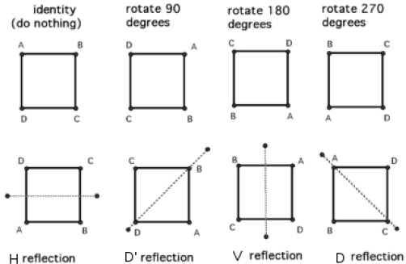
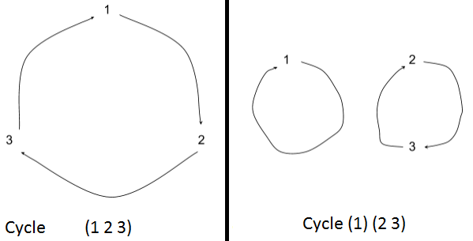
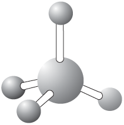

Important: since github markdown doesn't support LaTeX, view the complete note in the following link instead: https://rawgit.com/oldfatcrab/PMATH336/master/PMATH336_note.html
Table of Content
2016/05/02
Chapter 0: Course Administration
- Course structure
- Group Theory Basics
- Examples
- Axioms
- Subgroups and Lagrange's Theorem
- Cyclic groups
- Permutation groups
- Normal subgroups
- quotients
- homomorphisms
- Isomorphism theorems
- automorphism groups and conjugation
- Group Actions
- The orbit-statiliser theorem
- Cauchy's theorem
- Burnside's lemma
- Pòlya enumeration
- the class equation
- Other Topics
- Platonic solids
- classification of finite abelian groups
- cryptography
- application to physics (if time permitting)
- Grading
- 6 assignments: 30%
- Midterm: 20%
- Final: 50%
- Office
- MC 5427
- Monday 14:00-16:00, Thursday 15:00-17:00, or by appointment
Chapter 1: Groups
1.1 Definitions and examples:
- Let \(G\) be a non-empty set.
- Def'n: A binary operation on \(G\) is a map that
- \(G \times G \rightarrow G\)
- \((a,b) \mapsto a\star b\) or \(a\cdot b\) or \(ab\) (notation)
- A binary operation is often called a product
- Ex 1)
- \(G=\mathbb{Z}\) and
- and \(+: \mathbb{Z}\times \mathbb{Z} \rightarrow \mathbb{Z}\), \((m,n) \mapsto m+n\)
- or \(\cdot: \mathbb{Z}\times \mathbb{Z} \rightarrow \mathbb{Z}\), \((a,b) \mapsto ab\)
- Ex 2)
- \(G=\mathbb{R}^3\)
- and \( +: \mathbb{R}^3 \times \mathbb{R}^3 \rightarrow \mathbb{R}^3, ((x_1, y_1, z_1), (x_2, y_2, z_2)) \mapsto (x_1+x_2, y_1+y_2, z_1+z_2)\)
- and \(\times: \mathbb{R}^3 \times \mathbb{R}^3 \rightarrow \mathbb{R}^3, ((x_1, y_1, z_1), (x_2, y_2, z_2)) \mapsto (x_1, y_1, z_1) \cdot (x_2, y_2, z_2)\)
- but \(\dot: \mathbb{R}^3 \times \mathbb{R}^3 \rightarrow \mathbb{R}, ((x_1, y_1, z_1), (x_2, y_2, z_2)) \mapsto (x_1x_2, y_1y_2, z_1z_2)\) is not a binary operation because the target space is not \(G=\mathbb{R}^3\)
- Def'n (Groups): Let \(G\) be a non-empty set with a binary operation, \(G\times G\rightarrow G\), then \(G\) is a group if the binary operation has the following properties:
- (i) (Associativity): \(a(bc) = (ab)c\), \(\forall a,b,c \in G\)
- (ii) (Identity): \(\exists e \in G\) such that: \(ea = ae =a, \forall a\) in \(G\)
- (iii) (Inverse): \(\forall a \in G\), \(\exists a^{-1} \in G\) such that: \(aa^{-1} = a^{-1} a = e\)
- Ex 1)
- The integers: \((\mathbb{Z},+) \leadsto \) this is a group
- HERE: \(G = \mathbb{Z}\) and \(+: \mathbb{Z}\times\mathbb{Z} \rightarrow \mathbb{Z}, (m,n) \mapsto m+n\)
- Does \(+\) satisfy properties (i) to (iii)?
- (i) Let \(m, n, r \in \mathbb{Z}\), then:
- \(m+(n+r) = (m+n)+r\) ? YES!
- (ii) Identity of \(+\) is \(0 \in \mathbb{Z}\)
- because \(0 + m = m + 0 = m, \forall m \in \mathbb{Z}\)
- (iii) \(\forall m \in \mathbb{Z}\), we have that
- \(m + (-m) = (-m) + m = 0\)
- \(\Rightarrow -m \in \mathbb{Z}\) is the inverse of \(m \in \mathbb{Z}\)
- Thus, \((\mathbb{Z},+)\) is a group.
- Ex 2)
- The integers: \((\mathbb{Z},\cdot)\leadsto\) this is a group
- HERE: \(G = \mathbb{Z}\) and \(\cdot: \mathbb{Z}\times\mathbb{Z} \rightarrow \mathbb{Z}, (m,n) \mapsto m\cdot n\)
- Does \(\cdot\) satisfy properties (i) to (iii)?
- (i) Let \(m, n, r \in \mathbb{Z}\), then:
- \(m\cdot(n\cdot r) = (m\cdot n)\cdot r\) ? YES!
- (ii) Identity of \(\cdot\) is \(1 \in \mathbb{Z}\)
- because \(1 \cdot m = m \cdot 1 = m\), \(\forall m \in \mathbb{Z}\)
- (iii) \(\forall m \in \mathbb{Z}\), the inverse of m with respect to multiplication is \(\frac{1}{m}\) (if \(m \neq 0\)), but \(\frac{1}{m} \notin \mathbb{Z}\) if \(m\neq\pm1\). So property (iii) fails!
- Thus, \((\mathbb{Z},\cdot)\) is not a group.
- Ex 3)
- \(G = \{1, -1\}\) set of 2 elements with the binary operation given by:
| \(\cdot\) |
\(1\) |
\(-1\) |
| \(1\) |
\(1\) |
\(-1\) |
| \(-1\) |
\(-1\) |
\(1\) |
- (continue)
- Note that \(\cdot\) is just the usual product in \(\mathbb{R}\) restricted to element in \(G\). Then \(G\) is a group because:
- (i) \(\cdot\) is associative because multiplication in \(\mathbb{R}\) is associative
- (ii) \(1\) is the identity.
- (iii) From the table, we see that \(1\) is the inverse of \(1\) and \(-1\) is the inverse of \(-1\leadsto\) every element in \(G\) has an inverse.
- Ex 4)
- \((\mathbb{Q}, +)\) is a group (exercise)
- Ex 5)
- \( (\mathbb{Q}^*, \cdot)\) is a group where \(\mathbb{Q}^* = \mathbb{Q}\setminus\{0\}\)
- Indeed:
- (i) Multiplication in \(\mathbb{Q}^*\) is associative as in \(\mathbb{Z}\) and \(\mathbb{R}\)
- (ii) \(1 \in \mathbb{Q}^*\) is the identity with respect to \dot.
- (iii) \(\forall \frac{a}{b} \in \mathbb{Q}^*\), we have that \(\frac{b}{a} \in \mathbb{Q}^*\) and \(\frac{a}{b} \cdot \frac{b}{a} = \frac{b}{a}\cdot \frac{a}{b} = 1 \Rightarrow \frac{a}{b}^{-1} = \frac{b}{a} \Rightarrow\) every element in \(\mathbb{Q}^*\) has an inverse
- Note:
- \((\mathbb{Q}, \cdot)\) is not a group because even though (i) and (ii) hold, property (iii) fails for \(0 \in \mathbb{Q}\)
- Ex 6)
- \((\mathbb{R}, +)\) and \((\mathbb{C}, +)\) are groups
- Ex 7)
- \((\mathbb{R}^*, \cdot)\) and \((\mathbb{C}^*, \cdot)\) are groups (where \(\mathbb{R}^* = \mathbb{R}\setminus\{0\}\) and \(\mathbb{C}^* = \mathbb{C}\setminus\{0\})\)
- Ex 8)
- \((\{1, i, -1, -1\}, \cdot)\) is a group, where \(i \in \mathbb{C}\) such that \(i^2 = -1\). Here:
| \(\cdot\) |
\(1\) |
\(i\) |
\(-1\) |
\(-i\) |
| \(1 \) |
\( 1 \) |
\( i\) |
\(-1\) |
\(-i\) |
| \(i \) |
\( i \) |
\( -1\) |
\(-i\) |
\(1 \) |
| \(-1 \) |
\( -1 \) |
\( -i\) |
\(1 \) |
\(i \) |
| \(-i\) |
\( -i \) |
\( 1 \) |
\(i \) |
\(1 \) |
2016/05/04
- Review from last lecture:
- Def'n (Groups): Let \(G\) be a non-empty set with a binary operation, \(G\times G\rightarrow G\), then \(G\) is a group if the binary operation has the following properties:
- (i) (Associativity): \(a(bc) = (ab)c\), \(\forall a,b,c \in G\)
- (ii) (Identity): \(\exists e \in G\) such that: \(ea = ae =a, \forall a\) in \(G\)
- (iii) (Inverse): \(\forall a \in G\), \(\exists a^{-1} \in G\) such that: \(aa^{-1} = a^{-1} a = e\)
- Note: Properties (i)-(iii) in the def'n are called the group axioms
- Ex 9) Integer module n: \(\mathbb{Z}_n\)
- In \(\mathbb{Z}_n\), two integer \(r\) and \(s\) are equivalent if \(r = s+an\), for same \(a\) in \(\mathbb{Z}\), this is written as \(r \equiv s\) (mod \(n\))
- e.g.:
- \(\mathbb{Z}_3 = \{\overline{0}, \overline{1}, \overline{2}\}\)
- \(\overline{0} \equiv \{0, 3, -3, 6, \cdots\} \equiv \overline{3}\)
- \(\overline{1} \equiv \{1, 4, -2, 7, \cdots\} \equiv \overline{4}\)
- \(\overline{2} \equiv \{2, 5, -1, 8, \cdots\} \equiv \overline{5}\)
- \(\forall F, F' \in \mathbb{Z}_n\), we set:
- \(\overline{r} + \overline{r_1} = \overline{r+r_1}\), and
- \(\overline{r} \cdot \overline{r_1} = \overline{r \cdot r1}\)
- \((\mathbb{Z}_n, +)\): since \(+\) is associative in \(\mathbb{Z}\), it is also associative with \(\mathbb{Z}_n\). Moreover, \(\overline{0}\) is the identity for \(+\). finally, \(\overline{-r}\) is inverse of \(F\) with respect to \(+\). We will denote \(\overline{-r}\) by \(-\overline{r} \Rightarrow (\mathbb{Z}_n, +)\) is a group
- \((\mathbb{Z}_n, \cdot)\): Again, since \(\cdot\) is associative in \(\mathbb{Z}\), it is also associative in \(\mathbb{Z}\),. And \(\overline{1}\) is the identity for \(\cdot\), however, not every element in \(\mathbb{Z}_n\) has an inverse with respect to \(\cdot\). In fact, recall that \(F \in \mathbb{Z}_n\) has a multiplicative inverse iff \(gcd(r,n) = 1\). I.e. \(\exists \overline s \in \mathbb{Z}_n\) such that \(\overline r \cdot \overline s = \overline s \cdot \overline r = \overline 1\) iff \(gcd(r, n) = 1\)
- If an element \(\overline r \in \mathbb{Z}_n\) has an inverse in \(\mathbb{Z}_n\), it is called a unit.
- Set \(\mathbb{Z}_n^* = \{\text{units in }\mathbb{Z}_n\} = \{F\in \mathbb{Z}_n \mid gcd(r,n)=1\}\). Then, \((\mathbb{Z}_n^*, \cdot)\) is a group
- E.g. \(\mathbb{Z}_6 = \{\overline 1, \overline 2, \overline 3, \overline 4, \overline 5, \overline 6\}\) and \(\mathbb{Z}_6^* = \{\overline 1, \overline 5\}\)
- The Cayley table for \((\mathbb{Z}_6, \cdot)\) is:
| \(\cdot\) |
\(\overline 1\) |
\(\overline 5\) |
| \(\overline 1\) |
\(\overline 1\) |
\(\overline 5\) |
| \(\overline 5\) |
\(\overline 5\) |
\(\overline 1\) |
- Def'n: Let \((G, \cdot)\) be a group, the order of the group \(G\) is denoted \(\mid G \mid\), is the number of element in the group
- Remark: If the binary operation is clear, we write \(G\) instead of \((G, \cdot)\)
- E.g.:
- \((\mathbb{Z}, +) \Rightarrow \mid\mathbb{Z}\mid = \infty\)
- \((\mathbb{Z}_6,+) \Rightarrow \mid\mathbb{Z}_6\mid = 6\)
- \((\mathbb{Z}_6^*,\cdot) \Rightarrow \mid\mathbb{Z}_6^* \mid = 2\)
- Aside: There is another important set of objets in abstract algebra, which corresponds to rings (with identity):
- Def'n: A ring (with identity) is a non-empty set \(G\) together with two binary operations \(+\), \(\cdot\), such that:
- 1) \((G,+)\) is a group (i.e. \(+\) satisfies properties (i)-(iii)
- 2) \((G,\cdot)\) is such that \(\cdot\) satisfies (i) and (iii)
- 3) \(+\) and \(\cdot\) satisfy the distributive lays: \((a+b)\cdot c = a\cdot c+b\cdot c, \forall a,b,c \in G\)
- E.g. \((\mathbb{Z}, +, \cdot)\), \((\mathbb{R}, +, \cdot)\), \((\mathbb{C}, +, \cdot)\), \((\mathbb{Q}, +, \cdot)\) , \((\mathbb{Z}_6, +, \cdot)\) etc.
- In a ring, the elements that have inverses with respect to multiplication are called units
- Def'n: A group \((G, \cdot)\) is called abelian if the binary operation is commutative: \(a \cdot b = b \cdot a, \forall a,b \in G\)
- E.g. \((\mathbb{Z}, +)\), \((\mathbb{R}, +)\), \((\mathbb{C}, +)\), \((\mathbb{Q}, +)\) , \((\mathbb{Z}_6, +)\) etc.
- However, not every group is abelian!
- E.g. Consider \(G = GL(n, \mathbb{R}) = \{A\in M_{n\times n}(\mathbb{R}) \mid A\text{ is invertible}\} = \{A\in M_{n\times n}(\mathbb{R}) | \det A \neq 0\} \)
- Note that \(\exists\) natural operations on \(n\times n\) matrices: addition and multiplication. Let \(A, B \in M_{n\times n}(\mathbb{R})\). Then:
- \(A+B,\, A\cdot B \in M_{n\times n}(\mathbb{R})\)
- \(\Rightarrow +\), \(\cdot\) are binary operations for \(M_{n\times n}(\mathbb{R})\)
- However, if \(A, B \in G\), although \(A\cdot B \in G\), may not have \(A+B \in G\) (e.g. \(a\in G\) so that \(0\in G\), but \(A+(-A)=0 \notin G\)) \(\Rightarrow\) \(+\) is not a binary operation with for \(G\)
- Consider \((G, \cdot)\). Then it is a group (exercise) where the identity is the nxn identity matrix \(I_{n\times n}\). But, \((G, \cdot)\) is not abelian because \(AB \neq BA\) for most \(A,B \in G\)
- A group \((G, \cdot)\) is called non-abelian if it is not abelian.
- Some basic properties:
- 1) The identity element \(e\) in a group \((G, \cdot)\) is unique
- 2) The inverse of an element in a group \((G, \cdot)\) is unique
2016/05/06
- Review:
- Def'n (Groups): Let \(G\) be a non-empty set with a binary operation, \(G\times G\rightarrow G\), then \(G\) is a group if the binary operation has the following properties:
- (i) (Associativity): \(a(bc) = (ab)c\), \(\forall a,b,c \in G\)
- (ii) (Identity): \(\exists e \in G\) such that: \(ea = ae =a, \forall a\) in \(G\)
- (iii) (Inverse): \(\forall a \in G\), \(\exists a^{-1} \in G\) such that: \(aa^{-1} = a^{-1} a = e\)
- Some basic properties:
- 1) (Uniqueness of identity) The identity element \(e\) in a group \((G, \cdot)\) is unique
- 2) (Uniqueness of inverses) The inverse of an element in a group \((G, \cdot)\) is unique
- Proof of above identities:
- 1) (Uniqueness of identity)
- Suppose \(\exists e, f \in G\) such that \(ae = ea = a\) and \(af = fa = a, \forall a \in G\).
- In particular, since \(f\in G\), we have that \(f = fe\) because \(e\) is an identity
- Similarly, because \(e\in G\) and \(f\) is an identity, \(fe = e\)
- \(\Rightarrow f=fe=e\)
- 2) (Uniqueness of inverses)
- Let \(a\in G\). Suppose that a has two inverses in \(G\), say \(a^{-1}\) and \(b\). Therefore, by property (iii), we have: \(aa^{-1} = a^{-1} a = e\) and \(ab = ba = e\)
- Then \(a^{-1} = a^{-1}e = a^{-1}(ab) = (a^{-1}a)b = eb = b\)
- \(\Rightarrow a^{-1}=b\)
- Using these properties, we obtain:
- 3) \(e{-1}=e\)
- 4) \((ab)^{-1}=b^{-1}a^{-1},\forall a,b \in G\)
- 5) \((a^{-1})^{-1}=a,\forall a \in G\)
- 6) \((a_1a_2\cdots a_n)^{-1} = a_n^{-1}\cdots a_2^{-1}a_1^{-1}\)
- 7) (Cancellation Property) Let \(a,b,c\in G\) with \(G\) a group. If ab = ac, then b=c. If ba=ca, then b = c.
- Proof:
- 3)
- By uniqueness of the inverse, it is enough to check that \(ee = ee = e\) to proof that \(e^{-1}=e\). But this is true by property (ii).
- 4)
- By uniqueness of the inverse, it is enough to check that \(ab(b^{-1}a^{-1}) = (b^{-1}a^{-1})ab = e\)
- By associatitivy, we have that \(ab(b^{-1}a^{-1} = a(bb^{-1})a^{-1} = aea^{-1} = (ae)a^{-1} = aa^{-1} = e\)
- Similarly, \((b^{-1}a^{-1})ab=b^{-1}(a^{-1}a)b=b^{-1}eb=(b^{-1}e)b=b^{-1}b=e\)
- \(\Rightarrow (ab)^{-1}=b^{-1}a^{-1}\)
- Note:
- \(GL(n,\mathbb{R})=\) all general linear group
- One would be tempted to think that \((ab)^{-1}=a^{-1}b^{-1}\) but this is false in general.
- Example:
- \((G,\cdot) = (GL(2,\mathbb{R}),\cdot)\)
- A = \(\begin{pmatrix}1&2\\0&1\end{pmatrix}\) and B = \(\begin{pmatrix}2&0\\0&3\end{pmatrix}\)
- \(\Rightarrow AB = \begin{pmatrix}2&6\\0&3\end{pmatrix}\) and \((AB)^{-1}=\begin{pmatrix}\frac{1}{2}&-1\\ 0&\frac{1}{3} \end{pmatrix}\)
- But, \(A^{-1}B^{-1} = \begin{pmatrix}\frac 1 2&-\frac 2 3\\0&\frac 1 3\end{pmatrix} \neq (AB)^{-1}\)
- Nonetheless, \(B^{-1}A^{-1} = \begin{pmatrix}\frac{1}{2}&-1\\ 0&\frac{1}{3} \end{pmatrix} = (AB)^{-1}\)
- In fact, one can show that: \((ab)^{-1}=a^{-1}b^{-1},\forall a,b,\in G \Leftrightarrow G\) is abelian (Exercise).
- 5) and 6)
- 7)
- Suppose that \(ab = ac\). Then, since \(G\) is a group, \(\exists a^{-1}\in G\) such that \(aa^{-1}=a^{-1}a=e\)
- Therefore \(a^{-1}(ab)=(a^{-1}a)b=eb=b\)
- Similarly, \(a^{-1}(ac)=c\).
- But, \(ab=ac\), so that \(a^{-1}(ab)=a^{-1}(ac)=c\)
- The proof of 2nd cancellation property is similar
1.2 Subgroups
- Def'n: Let \(G\) e a group. If a subset \(H\) of \(G\) is itself a group under the operation of \(G\), we say that H is a subgroup of \(G\).
- Note: the definition of a subgroup implies that subset it is closed under the operation in G. I.e. \(\forall a,b\in H\), then \(ab\in H\). This ensures that restriction of the binary operation \(G\times G\rightarrow G\) is again a binary operation taking \(H\times H\rightarrow H\). However, a subset of a group of \(G\) may not be closed under the operation on \(G\).
- E.g. \((M_{n\times n}(\mathbb{R}), +)\) is a group and \(GL(n,\mathbb R)=\{A\in M_{n\times n}(\mathbb R) \mid \det A\ne 0\} \subset M_{nxn}(\mathbb R)\), but \(GL(n, \mathbb R)\) is not closed under \(+\) (e.g. \(\forall A \in GL(n,\mathbb R), -A \in GL(n,\mathbb R)\)) but \(A+(-A) \notin GL(n,\mathbb R)\)
- We use the notation \(H \vartriangleleft G\) (or \(H<G\)) to mean that H is a subgroup of \(G\). (some authors use \(H\trianglelefteq G\) and \(H\vartriangleleft G\) indicates that \(H \leq G\)). If \(H \leq G\), then H is called a proper subgroup of G. The singleton \(\{e\}\) is a subgroup of \(G\) called the trivial subgroup; a subgroup of \(G\) that is not \(\{e\}\) is called a non-trivial subtroup of G.
- How does one determine whether or not a subset \(H\) of \(G\) is a subgroup? There are 2 tests:
- Theorem (One-step subgroup test): Let \(H\) be a non-empty subset of a group \(G\). If \(ab^{-1}\in H,\forall a,b\in H\), then \(H\vartriangleleft G\).
2016/05/09
Review from previous lectures:
- \((G,\cdot)\) is a group if:
- operation is associative
- (Identity): \(\exists e\in G\) such that \(ae = ea = a, \forall a\in G\)
- (Inverses): \(\forall a \in G, \exists a^{-1} \in G\) such that \(aa^{-1}=a^{-1}a=e\).
- Subgroup: let \(0\neq H\subset G\) such that \(H\) itself is a group under the same operation as G
- Note: It is implicit in the definition that \(H\) is closed under the operation of \(G\) (i.e., \(\forall a,b \in H\), then \(ab\in H\)).
- Theorem (One-step subgroup test): Let \(G\) be a group and \(H\) be a non-empty subset of \(G\). Then, \(H\) is a subgroup of \(G\) if \([ab^{-1}\in H,\forall a,b\in H]\quad(*)\)
Proof of one-step subgroup test:
- We first need to check that H is closed under the operation in G. Given then property that \(ab^{-1} \in H, \forall a,b\in H \) if we can prove that, \(\forall a,b \in H, b^{-1}\in H\), then \(ab=a(b^{-1})_{-1}\in H\).
- We first notice that \(e\in H\), because \(H\) has at least one element, say a, so that \(e=aa^{-1}\in H\) (by \((*)\)).
- Also, \(e^{-1} = e\). Thus, \(\forall a \in H\), we have that \(a^{-1} = ea^{-1}\in H\) (by \((*)\)).
- Finally, \(\forall a,b\in H\), since \(b^{-1}\in H\), we get that \(ab=a(b^{-1})^{-1}\in H\) by \((*)\)
- \(\Rightarrow H\) is closed under the operation
- Note: we still to check that the restriction of the operation on \(G\) satisfies the 3 group axioms. Since the operation is associative on \(G\), it is also associative on \(H\). And we have already seen that the identity and inverse axioms hold.
Theorem (Two-step subgroup test) Let \(G\) be a group and \(H\) be a non-empty subset of \(G\). Then \(H\) is a subgroup of \(G\) if \(ab\in H \forall a,b\in H\) (H is closed under the operation on G), and \(a^{-1} \in H, \forall a \in H\) (H is closed under inverse).
- Proof: Let \(a,b\in H\). Then \(b^{-1} \in H\) so that \(ab^{-1} \in H\). Thus, by one-step subgroup test, H is a subgroup.
- Remark: The two-step subgroup test is useful if one already knows that the subset \(H\) of \(G\) is clsed under the operation or clsed under inverses, so that there then is only one thing left to check.
- Ex 1)
- \((\mathbb C, +) \leadsto (\mathbb Z^*, +) \vartriangleleft (\mathbb Q^*,+)\vartriangleleft (\mathbb R^*,+)\vartriangleleft (\mathbb C^*,+)\)
- \((\mathbb C, \cdot) \leadsto (\mathbb Q^*,\cdot)\vartriangleleft (\mathbb R^*,\cdot)\vartriangleleft (\mathbb C^*,\cdot)\)
- Note: \(^*\) means without zero
- Ex 2)
- \((\{1,-1\}, \cdot)\) group with \(\cdot\) the usual multiplication in \(\mathbb C\)
- \((\{1,-1\}, \cdot)\vartriangleleft(\mathbb Q^*, \cdot)\vartriangleleft(\mathbb R^*, \cdot)\vartriangleleft(\mathbb C^*, \cdot)\)
- Ex 3)
- \((\mathbb Z, +)\)
- \(H=\{2m\mid m\in \mathbb Z\} \Rightarrow \) H is closed under \(+\) since the sum of 2 even integers is even
- Also, \(\forall 2m \in H\), its inverse - \(2m\in H \Rightarrow H\) is closed under inverse. Thus, \(H \vartriangleleft (\mathbb Z,+)\) by the two-step subgroup test
- Ex 4)
- \((\mathbb Z_6,+) =\{\overline 0, \overline 1, \overline 2, \overline 3, \overline 4, \overline 5\}\)
- Then, \(H = \{\overline 0, \overline 2, \overline 4\} \vartriangleleft \mathbb Z_6\)
- \((Z_6^*, \cdot) = {\overline 1, \overline 5} \leadsto \) the only proper subgroup of \(Z_6^*\) is the trivial subgroup \(H=\{\overline 1\}\)
- \((Z_{12}^*, \cdot) =\{\overline 1,\overline 5,\overline 7,\overline{11}\}\)
| \(\cdot\) |
\(\overline 1\) |
\(\overline 5\) |
\(\overline 7\) |
\(\overline {11}\) |
| \(\overline 1\) |
\(\overline 1\) |
\(\overline 5\) |
\(\overline 7\) |
\(\overline{11} \) |
| \(\overline 5\) |
\(\overline 5\) |
\(\overline 1\) |
\(\overline{11}\) |
\(\overline 7\) |
| \(\overline 7\) |
\(\overline 7\) |
\(\overline{11}\) |
\(\overline 1\) |
\(\overline 5\) |
| \(\overline{11}\) |
\(\overline{11}\) |
\(\overline 7\) |
\(\overline 5\) |
\(\overline 1\) |
-
- Every element is inverse itself
- \((\{\overline 1, \overline5\},\cdot), (\{\overline 1,\overline 7 \},\cdot), (\{\overline 1, \overline{11} \},\cdot), (\{\overline1 \},\cdot)\leftarrow\) These are the only proper subgroups of \((\mathbb Z_{12}^*, \cdot)\)
- Note: We have seen in the proof of the one-step subgroup test that if \(H\vartriangleleft G\), then \(e \in H\) where \(e\) is the identity in \(G\). However, since \(H\) is closed under the operation on \(G, \forall a\in H, ae = ea = a\) (since \(e\) is the identity in \(G\)) \(\Rightarrow e\) is an identity element in \(H\) for the operation in \(H\). So, because identity element are unique, \(e\) is also the identity in \(H\).
Prop: Let \(G\) be a group and \(a\in G\). Set \(\langle a\rangle:=\{a^m = aa\cdots a \mid m\in \mathbb Z\}\) Then \(\langle a\rangle \vartriangleleft G\) called the cyclic subgroup of \(G\) generated by \(a\)
- Proof:
- Let \(a^m, a^{m'}\in \langle a\rangle\).
- Then \((a^m)^{-1} = a^{-m}\in <a\rangle\), since \(-m' \in \mathbb Z\).
- Therefore \(a^m (a^{m'})^{-1} = a^m a^{-m'} = a^{m-m'} \in \langle a\rangle\) since \(m'\in Z\).
- So, by the 1-step subgroup test, \(\langle a\rangle \vartriangleleft G\)
- Ex 1)
- \((\mathbb Z,+) \leadsto H=\{2m \mid m\in \mathbb Z\}=\langle 2\rangle\) since, using additive notation, \(\langle 2\rangle = \{2+2+\cdots +2\mid m\in \mathbb Z\}\)
- Ex 2)
- \((\mathbb Z_{12}^*, \cdot) = \{\overline 1,\overline 5,\overline 7,\overline{11}\}\)
- \(\{1,5\}\) = \(\langle\overline 5\rangle\) because \(\langle\overline 5\rangle = \langle1, \overline 5, \overline 5^2, \overline 5^3, \cdots\rangle\)
- \(\{\overline 1, \overline 7\}\)
- \(\{\overline 1, \overline{11}\}\)
2016/05/11
Clarification from last lecture:
- Let \(G\) be a group, and \(a\in G\). We defined: \(\langle a\rangle:=\{a^m\mid m\in \mathbb Z\}\) when \(a^0:=e\) and \(a^{-n} = a_{-1}\cdot a_{-1}\cdot \cdots a_{-1}\) if \(n\in \mathbb N\).
- This means \(a^{n}a^{-n}\) \(= (a_{1}\cdot a_{1}\cdot \cdots a_{1})( a_{-1}\cdot a_{-1}\cdot \cdots a_{-1}) \) \(= (a_{1}\cdot a_{1}\cdot \cdots a_{1})(a_{1}\cdot a_{-1})( a_{-1}\cdot a_{-1}\cdot \cdots a_{-1}) \) \(= (a_{1}\cdot a_{1}\cdot \cdots a_{1})e( a_{-1}\cdot a_{-1}\cdot \cdots a_{-1}) \) \(= \cdots = e\). Similarly, \(a^{-n}a^{n} =e\). So, by uniqueness of inverses, \(a^{-n} = (a^{-1})^n\). Also note that \(\langle a\rangle = \langle a^{-1}\rangle\) because, \(\forall m \in \mathbb Z, \langle a\rangle \ni a^m=(a^{-1})^m \in \langle a^{-n}\rangle\). We have that prop: \(\langle a\rangle \vartriangleleft G\)
Important:
- Let \(G\) be a group and \(H\vartriangleleft G\). By definition, this means that \(H\) is a group in its own right so that:
- \(H\) has an indentity element, \(e_H\in H\)
- \(\forall a\in H\), then it has an inverse in \(H\), say \(a_H^{-1}\in H\), such that \(aa_H^{-1}=a_H^{-1}a=e_H\)
- Then, \(e_H=e=\)(indentity in \(G\)) because, \(\forall a\in H, since a\in G\) as \(H\subset G\), we have \(ae=ea=a\).
- So, \(e\) is an indentity in \(H\), implying that \(e=e^H\) by uniqueness of the indentity element.
- Similarly, if \(a^{-1}\) as the identity of \(a\in G\), then \(aa^{-1}=a^{-1}a=e=e_H\)
- \(\Rightarrow a^{-1}\) is an indentity for \(a\in H\Rightarrow a^{-1}=a_H^{-1}\) by uniqueness of inverse
- So: if \(H\vartriangleleft G\), then the indentity of \(H\) is the indentity of G and the inverse of any element in \(H\) is its inverse in \(G\).
Given a subset \(H\subset G\), how can we tell if \(H\) is \(NOT\) a subgroup of \(G\)?
- If \(e\notin H\), then \(H \not \vartriangleleft G\)
- If \(H\) is not closed under the operation on \(G\), then \(H \not \vartriangleleft G\)
- E.g. \((G,\cdot) = (\mathbb R^*, \cdot)\) and \(H = \{x\in(G, \cdot) \mid x=q or x \mathbb Q\}\). Note that \(1\in H\), so that \(H\) may be a subgroup of \(G\). BUT, \(\sqrt{2}\in H\) and \(\sqrt{2}\sqrt{2} \notin H\)
- \(\Rightarrow H\) is not closed under multiplication
- \(\Rightarrow H \not \vartriangleleft G\)
- \(H\) is not closed under inverses, the \(H \not \vartriangleleft G\) (i.e. If \(\exists a \in G\) with \(a^{-1} \notin H\), then \(H \not \vartriangleleft G\))
- E.g. \((G,\cdot) = (\mathbb R^*,\cdot)\) and \(H = \{x\in (G,\cdot) \mid x\ge 1\}\). Note that \(1\in H\). Also, \(\forall x,y\in H, xy\in H\) because \(xy \ge 1\) since \(x,y\ge 1\). But, \(2\in H\) and \(2^{-1} = \frac{1}{2}\notin H\).
- \(\Rightarrow H\) is not closed under inverses
- \(\Rightarrow H\not \vartriangleleft G\)
Also not every of element in a group commute, some element commute with every element in a group. For example, if \(G\) is a group, then \(e\) commutes with every element in \(G\) because \(ae=ea, \forall a \in G\)
Definition (Centre of a group): Let \(G\) be a group, we define \(\mathcal Z(G):=\{a\in G\mid ax=xa, \forall x \in G\}\) = (element in \(G\) that commute with all elements in \(G\)) = centre of G
- Note:
- 1) \(\mathcal Z\) is for zentrum = (centre in German)
- 2) \(e\in \mathcal Z(G)\)
- 3) If \(G\) is abelian, then \(\mathcal Z(G) = G\). In fact, we have (\(G\) is abelian) \(\Leftrightarrow\) (\(\mathcal Z(G) = G\))
- Ex: Consider \(\mathcal G=GL(2,\mathbb R) = \{A\in M_{2\times 2}(\mathbb R)\mid \det A \neq 0\}\) under matrix multiplication. Let us show that \(\mathcal Z(G) = \bigg \{\left.\begin{pmatrix}a&0\\0&a\end{pmatrix}\right\vert a\in R^*\bigg\}\subset \mathcal Z(G)\). Note that \(\mathcal Z(G)\neq G\), which is to be expected since \(G\) is not abelian!
- Proof:
- \(\mathcal Z(G)\subset \bigg \{\left.\begin{pmatrix}a&0\\0&a\end{pmatrix}\right\vert a\in R^*\bigg\}\subset \mathcal Z(G)\)
- Let \(\begin{pmatrix}a&b\\c&d\end{pmatrix}\in \mathcal Z(G)\) so that \(\begin{pmatrix}a&b\\c&d\end{pmatrix}\) commutes with every matrix in \(GL(2,\mathbb R)\)
- In particular:
- \(\begin{pmatrix}a&b\\c&d\end{pmatrix}\begin{pmatrix}1&0\\0&2\end{pmatrix}=\begin{pmatrix}1&0\\0&2\end{pmatrix}\begin{pmatrix}a&b\\c&d\end{pmatrix}\)
- \(\Leftrightarrow \begin{pmatrix}a&2b\\c&2d\end{pmatrix}=\begin{pmatrix}a&b\\2c&2d\end{pmatrix}\)
- \(\Rightarrow c = 2c\) and \(2b = b\)
- \(\Rightarrow c=b=0\)
- \(\Rightarrow (a,0;0,b)\) (i.e. must be diagonal)
- \(\begin{pmatrix}a&0\\0&d\end{pmatrix}\begin{pmatrix}1&1\\0&1\end{pmatrix}=\begin{pmatrix}1&1\\0&1\end{pmatrix}\begin{pmatrix}a&0\\0&d\end{pmatrix}\)
- \( \Leftrightarrow \begin{pmatrix}a&a\\0&d\end{pmatrix}=\begin{pmatrix}a&d\\0&d\end{pmatrix}(a,a;0,d)=(a,d;0,d)\)
- \(\Rightarrow a=d\)
- So \(\mathcal Z(G) = {\begin{pmatrix}a&0\\0&a\end{pmatrix}\mid a\in R^*}\), where \(a \neq 0\) because \(\det \begin{pmatrix}a&0\\0&a\end{pmatrix} = a^2 \neq 0\)
- \(\bigg \{\left.\begin{pmatrix}a&0\\0&a\end{pmatrix}\right\vert a\in R^*\bigg\}\subset \mathcal Z(G)\):
- Proof:
- Consider \(\begin{pmatrix}a&0\\0&a\end{pmatrix}\) with \(a \in \mathbb R^*\).
- Then, \(\forall \begin{pmatrix}x&y\\z&w\end{pmatrix}\in GL(2,\mathbb R)\), we have: \(\begin{pmatrix}a&0\\0&a\end{pmatrix}\begin{pmatrix}x&y\\z&w\end{pmatrix}=\begin{pmatrix}ax&ay\\az&aw\end{pmatrix} = \begin{pmatrix}a&0\\0&a\end{pmatrix}\)
- \( \Rightarrow \begin{pmatrix}a&0\\0&a\end{pmatrix}\in \mathcal Z(G)\)
- and \(\bigg \{\left.\begin{pmatrix}a&0\\0&a\end{pmatrix}\right\vert a\in R^*\bigg\}\subset \mathcal Z(G)\)
Theorem (center is a subgroup): Let \(G\) be a group.Then \(\mathcal Z(G) \vartriangleleft G\).
- Proof:
- Let us use 2-step subgroup test.
- We need to verify that \(\mathcal Z(G)\) is a) closed under the operation, and b) also closed under inverses.
- a) Let \(a,b\in \mathcal Z(G)\). Then \(ax=xa\) and \(bx=xb, \forall x\in G\). Do we have \((ab)x = x(ab), \forall x \in G\)?
- Let \(x\in G\). Then, \((ab)x = a(bx) = a(xb) = (ax)b = (xa)b = x(ab)\)
- \(\Rightarrow ab\in \mathcal Z(G)\)
- b) Let \(x\in \mathcal Z(G)\) so that \(ax = xa, \forall x\in G\). Then \(a^{-1}x = (x^{-1}a)^{-1} = (ax^{-1})^{-1} = (x^{-1})^{-1}a^{-1} = xa^{-1} \Rightarrow a^{-1}\in \mathcal Z(G)\)
2016/05/13
- Review of last lecture:
- Def: Let G be a group. Then \[\mathcal Z(G) = \{a\in G\mid ax=xa,\forall x\in G\} = center of G\]
- Note: \(G\) is abelian iff \(\mathcal Z(G)=G\)
- Theorem: \(\mathcal Z(G)\) is a subgroup of \(G\)
Definition (Centraliser of an element \(a\) in \(G\)): Let \(G\) be a group and \(a \in G\). Then: \[\mathcal C(a):= {g\in G\mid ag=ga}\\=\{\text{set of all element in }G\text{ that commute with }a\}\\=\{\text{centraliser of }a\text{ in }G\}\]
E.g.
- 1) \(\mathcal C(e) = G\) since, \(\forall a\in G, eg=ge\)
- 2) If \(a\in \mathcal Z(G)\), then \(C(a)=G\). Moreover, if \(a\in G\) is such that \(\mathcal C(a)=G\), we must have that \(a\in \mathcal Z(G)\), by definition of \(\mathcal Z(G)\) So: \((a\in \mathcal Z(G))\Leftrightarrow(\mathcal C(a)=G)\)
- 3) \(G=GL(2, \mathbb R)\). Then, \(\mathcal Z(G) = \bigg \{\left.\begin{pmatrix}a&0\\0&a\end{pmatrix}\right.\mid a\in \mathbb R^* \bigg \}\)
- Consider \(A=\begin{pmatrix}a&0\\0&b\end{pmatrix}\) with \(a\neq b\) and \(a,b\neq 0\) (so that \(\begin{pmatrix}a&0\\0&b\end{pmatrix}\in G\))
- Let us compute \(\mathcal C(A)\). Note that since \(A\notin \mathcal Z(G)\), we must have that \(\mathcal C(A) \subsetneqq G\).
- By definition, \(\mathcal C(A)=\bigg \{\left.\begin{pmatrix}x&y\\z&w\end{pmatrix}\right.\in GL(2,\mathbb R)\mid A\begin{pmatrix}x&y\\z&w\end{pmatrix}=\begin{pmatrix}x&y\\z&w\end{pmatrix}A\bigg \}\)
- BUT, \(\begin{pmatrix}a&0\\0&b\end{pmatrix}\begin{pmatrix}x&y\\z&w\end{pmatrix}=\begin{pmatrix}x&y\\z&w\end{pmatrix}\begin{pmatrix}a&0\\0&b\end{pmatrix} \Leftrightarrow \begin{pmatrix}ax&ay\\bz&bw\end{pmatrix}\Leftrightarrow ay=by\) and \(bz=az \Leftrightarrow (a-b)y=0\) and \((a-b)z=0 \Leftrightarrow y=z=0\)
- So: \(\mathcal C(A)=\bigg \{\left.\begin{pmatrix}x&0\\0&w\end{pmatrix}\right.\mid x,w\in \mathbb R^* \bigg \}\subset GL(2,\mathbb R)\)
Theorem: Let \(G\) be a group and \(a\in G\). Then, \(\mathcal C(a)\) is a subgroup.
Remark
- 1) \(\forall a\in G, \mathcal C(a)=\mathcal C(a^{-1})\)
- 2) \(\mathcal Z(G) = \bigcap\limits_{a\in G} \mathcal C(a)\)
- Proof for exercise
1.3 Finite groups
- Definition: A group \(G\) is called finite if \(|G|<\infty\) (i.e. \(G\) has a finite number of elements)
- E.g.:
- 1) \((\mathbb Z_n, +) \leadsto |G|=n<\infty\)
- 2) \((\mathbb Z_n^*, \cdot) \leadsto |\mathbb Z_n^*|<|\mathbb Z_n|=n<\infty\)
- 3) Permutations of degree \(n\)
- Permutations of degree \(n\) is a bijection from \(\{1,\cdots, n\}\) to itself, i.e. it is a map \[\sigma :{1,\cdots,n}\rightarrow{1,\cdots,n}\] that is 1:1 and onto. The set of all permutation of degree n is denoted \(S_n\)
- \(S_n\) is group under the operation of composition \[S_n\times S_n \rightarrow S_n\\(\sigma, \tau)\mapsto\sigma\circ \tau\] (which is well-defined because \(\sigma,\tau:\{1,\cdots,n\}\rightarrow\{1,\cdots,n\}\) so that \(\sigma\circ \tau\) is well-defined. and \(\sigma\circ\tau\) is a bijection since \(\sigma,\tau\) are both bijection) Also composition of function is associative, the identity permutation \(id:\{1,\cdots,n\}\rightarrow\{1,\cdots,n\}, i\mapsto i\), is an identity for the operation of composition \(\forall \tau\in S_n\), its inverse map \(\tau^{-1}\in S_n\) and is an inverse for \(\tau\) with respect to the operation of composition. So, \((S_n,\circ)\) is a group
- Claim: \(S_n\) has \(n!\) elements
- Proof: to determine \(\sigma\), we just have to specify the values \(\sigma_1, \cdots, \sigma_n\) which are distinct element of \(\{1,\cdots,n\}\) since \(\sigma\) is 1:1
- \(\sigma(1)\) can take \(n\) possible values since \(\sigma(1)\in \{1,\cdots,n\}\)
- \(\sigma(2)\) can take \(n-1\) possible values once \(\sigma(1)\) is fixed because \(\sigma(2)\in \{1,\cdots,n\} \setminus \{\sigma(1)\}\)
- \(\sigma(3)\) can take \(n-2\) possible values once \(\sigma(1)\) and \(\sigma(2)\) is fixed because \(\sigma(3)\in \{1,\cdots,n\} \setminus \{\sigma(1),\sigma(2)\}\)
- etc\(\cdots\)
- \(\sigma(n)\) can only take one possible value once \(\sigma(1),...,\sigma(n-1)\) are fixed
- Thus, there are \(n(n-1)\cdots 1=n!\) possible ways of defining \sigma
- So: \((S_n,\circ)\) is a finite group with \(|S_n| = n!\), we often just write \(S_n\) and call it the symmetric group of degree n.
- For a finite group \(G\), checking that a subset \(H\subset G\) is a subgroup is very simple
- Theorem (Finite subgroup test): Let \(G\) be a finite group and let \(\phi\ne H\subset G\). Then \[(H\text{ is a subgroup of }G)\Leftrightarrow(ab\in H, \forall a,b\in H)\]
- Proof:
- If \(H\) is a subgroup of \(G\), then it is closed under the operation in \(G\) (by definition), so the property holds so that \(ab\in H, \forall a,b\in H\). Since \(H\) is closed under the operation in \(G\), by the 2-step subgroup test, the only thing left is that \(H\) is closed under inverse: \(\forall a\in H, a^{-1}\in H\).
- Let \(a\in H\). If \(a=e\), then \(a^{-1}=e^{-1}=e=a\in H\). If \(a\neq e\), consider the set \(S={a, a^2, a^3, \cdots} = {a^m\mid m\in \mathbb N}\). Then \(S\subset G\) with \(G\) finite \(\Rightarrow S\) has only a finite number of elements.
- Moreover, since \(H\) is closed under the operation in \(G\), we have that \[a^2=a\cdot a \in H\text{ since }a\in H\\a^3=a^2\cdot a\in H\text{ since }a,a^2\in H\\\text{etc}\cdots\\\Rightarrow a^m\in H, \forall m\in \mathbb N\\\Rightarrow S\subset H\]
- Now, since \(S\) is finite, \(\exists i,j\in \mathbb N\) such that \(i\neq j\) and \(a^i=a^j\). Suppose that \(i<j\) so that \(j-i>0\) and so \(j-i\in \mathbb N\).
- Then, \(a^{j-i}=e\) (since \(a^i=a^j\)) with \(j-i\geq 1\) (since \(j-i>0\))
- If \(j-i=1\), then \(a=a^1=a^{j-i}=e\), which is impossible since we assumed that \(a\neq e\)
- So, \(j-i>1 \Rightarrow j-i-1>0\) and \(j-i-1\in \mathbb N\)
- \(\Rightarrow a^{j-i-1}\in S\subset H\)
- BUT, \(a^{-1}=e\cdot a^{-1} = a^{j-1}\cdot a^{-1}=a^{j-i-1}\in H\)
2016/05/16
- Review:
- Definition: A group is finite if \(|G|<\infty\)
- Theorem (Finite subgroup test): Let \(G\) be a finite group and let \(\phi\ne H\subset G\). Then \[(H\text{ is a subgroup of }G)\Leftrightarrow(ab\in H, \forall a,b\in H)\]
- Note: For a finite group, it is enough to check whether a non-empty subset \(H\) is closed under the operation to determine if \(H\) is a subgroup.
- Ex:
- Consider \(\mathbb Z_n^*\), which is finite, and \(k \in \mathbb N\) with \(k|n\). Let \[H=\{\overline x\in \mathbb Z_n^*\mid x \bmod k=1\}\]
- We need to check that this definition is independent of the representative \(x\) of \(\overline x\)
- [If \(\overline{x'} = \overline x\), we need to check \[(x\bmod k =1)\Leftrightarrow(x'\bmod k =1)\]
- But \(\overline{x'} = \overline x\) in \(\mathbb Z_n^*\Leftrightarrow x'+x+rn\) for some \(r\in \mathbb Z\)
- However, \(k|n\) so that \(n=ks\) with \(s\in \mathbb N\). Thus \[x'=x+rn=(x+rs)k\]
- \(\Rightarrow x'=x\bmod k\), and \[(x'\bmod k=1)\Rightarrow (x'+m'k=1)\text{ for some }m'\in \mathbb Z\] \[\Leftrightarrow x+(rs)k+m'k=1\] \[\Leftrightarrow x+k[rs+m']=1\text{ for some }m'\in \mathbb Z\] \[\Leftrightarrow (x\bmod k=1)\text{ for some }m'\in \mathbb Z\]
- \(H=\{\overline x\in \mathbb Z_n^*\mid x\bmod k=1\}\)
- Here, the operation in \(\mathbb Z_n^*\) is multiplication. If \(\overline x, \overline y\in H\) so that \(x\bmod k=1\) and \(y\bmod k=1\), then \(x+mk=1\) and \(y+m'k=1\) for some \(m,m'\in \mathbb Z\) and \[1=(x+mk)(y+m'k)=xy+[xm'+my+mm'k]k\] \[\Leftrightarrow xy\bmod k=1\Rightarrow \overline{xy}\in H \Rightarrow \overline x\overline y \in H\]
- So, by the finite subgroup test, \(H\) is a subgroup of \(\mathbb Z_n^*\) because \(H\neq \emptyset\) (since \(\overline 1\in H\) because \(1\bmod k=1\))
- Defnition (order of an element): Let \(G\) be a group. For any \(a\in G\), the order of a is defined as the smallest positive integer in such that \(a^m=e\) (if it exists. If no such integer exists, then a is said to have infinite order. The order of a is denoted \(|a|\).
- Note:
- 1) To compute the order of an element\(a\in G\), consider the sequence of for for odeuts(?) \(1^1,a^2,a^3\cdots,\) and the first power of a that is equal to \(e\) will be the order of \(a\)
- 2) \(|e| = 1\) because \(e^1=e\). In fact, if \(a\in G\) with \(|a|=1\), then \(a^1=e\). So the only element in \(G\) that has order \(1\) is the identity \(e\).
- 3) \(\forall a\in G, |a|=|a^{-1}|\)
- Proof: Suppose that \(|a|=m\). Then, \(a^m=e\). So, \[(a^{-1})^m=a^{-m}=(a^m)^{-1}=e^{-1}=e\] So, by definition of the order of an element, since \((a^{-1})^m=e\), we have: \[|a^{-1}|\le m=|a|\] One prove similarly that \(|a|=|a^{-1}|\Rightarrow |a|=|a^{-1}|\)
- 4) \(\forall a\in G, |\langle a\rangle|=|a|\) where \(\langle a\rangle=\{a^r \mid r\in \mathbb Z\}\) (i.e., the number of element in \(\langle a\rangle\) is equal to \(|a|\))
- 5) If \(|G|<\infty\), then \(|a|<\infty, \forall a\in G\), In fact, \(|a|\le |G|\)
- E.x.
- 1) \(\mathbb Z_6=\{\overline 0, \overline 1, \overline 2, \overline 3, \overline 4, \overline 5\} \leadsto\) Here: operation is \(+\) and \(e=\overline 0\) Then: \[|\overline 0|=1\] \[|\overline 1|=6\text{ because }\overline 1+\overline 1+\overline 1+\overline 1+\overline 1+\overline 1=\overline 6=\overline 6\] \[\\overline 2|=3 \text{ because } \overline 2+\overline 2+\overline 2=\overline 6=\overline 0\] \[|\overline 3|=2 \text{ because } \overline 3+ \overline 3=\overline 6 = \overline 0\] \[|\overline 4|=3\] \[|\overline 5|=6\]
- Note that \[\overline 5^{-1}=\overline 1\text{ and }|\overline 5|=|\overline 1|=6,\] \[\overline 4^{-1}=\overline 2\text{ and }|\overline 4|=|\overline 2|=3,\] \[\overline 3^{-1}=\overline 3\]
- 2) \(\mathbb Z_6^* = \{\overline 1, \overline 5\}\leadsto\) Here: operation is \(\cdot\) and \(e=\overline 1\)
- \(|\overline 1|=1, |\overline5|=2\) because \(\overline 5\cdot \overline 5 = \overline 1\)
- 3) Not ever element of a group has finite order
- e.g. \((G,\cdot)=(\mathbb Z, +)\). Then, \(2\in \mathbb Z\) has infinite order because \(2+2+\cdots+2=2m\neq0,\forall m\in \mathbb N\)
- New example of a finite group: the Dihedral group \(D_n, n \ge 3\). These groups represent symmetries of regular n-gons in \(\mathbb R^2\)
- \(n=3\): regular 3-gon is \(\mathbb R^2\) is an equilateral triangle.
- Consider the 6 following symmetries of the triangle (3 rotations+3 reflections):
- \(R_0=\) rotation about the origin by \(0\) rad conterclockwise

- \(R_1=\) rotation about the origin by \(\frac{2\pi}{3}\) rad conterclockwise

- \(R_2=\) rotation about the origin by \(\frac{4\pi}{3}\) rad conterclockwise

- \(H\): flip from height through point B in graph

- \(V\): flip from height through point A in graph

- \(D\): flip from height through point C in graph

2016/05/18
Review:
- \(D_{n}=(\) dihedral group \()=(\)group of symmetries of regular n-gon in \(\mathbb R^2)\) (Here: rotations and reflections)
- \(R_0, R_1, R_2, H,V,D\cdots\)
- Set \(D_3=\{R_0, R_1, R_2, H,V,D\}\)
- Claim: \(D_3\) is a group under composition
- First thing to check is that \(D_3\) is closed under composition，i.e. \(\forall f,g\in D_3, f\circ g\in D_3\)
- Table:
| \(f\circ g\) |
\( R_0 \) |
\( R_1 \) |
\( R_2 \) |
\( H \) |
\( V \) |
\( D \) |
| \(R_0 \) |
\( R_0 \) |
\( R_1 \) |
\( R_2 \) |
\( H \) |
\(V \) |
\( D \) |
| \(R_1 \) |
\( R_1 \) |
\( R_2 \) |
\( R_0 \) |
\( D \) |
\( H\) |
\(V\) |
| \(R_2\) |
\(R_2\) |
\(R_0\) |
\(R_1\) |
\(V\) |
\(D\) |
\(H\) |
| \(H\) |
\(H\) |
\(V\) |
\(D\) |
\(R_0\) |
\(R_1\) |
\(R_2\) |
| \(V\) |
\(V\) |
\(H\) |
\(D\) |
\(R_2\) |
\(R_0\) |
\(R_1\) |
| \(D\) |
\(D\) |
\(H\) |
\(V\) |
\(R_1\) |
\(R_2\) |
\(R_0\) |
-
- Also:
- composition is assotiation
- \(R_0\) is the identity
- every element as an inverse: \(R_0^{-1}=R_0, R_1^{-1}=R_2=R_2^{-1}=R_1, H^{-1}=H,V^{-1}=V,D^{-1}=D\)
- \(\Rightarrow D_3\) is a group with 6 elements
- In general, \(D_{n}\) is a finite group with \(|D_n|=2n\), where
- \(D_{n}\) will contain \(n\) rotation (about the origin, counterclowise by \(\frac{2\pi}{r}\) rad.) and \(n\) reflections (read about in a textbook)
- when \(n=4\):
- 
- \(\Rightarrow\) only need to use either 2 vertices that are jointed by a diagonal OR \(\frac{1}{2}\) point of 2 opposite edges to get all the reflections
- \(\Rightarrow\) since there are 4 vertices and 4 edges, get 4 reflections
1.4 Cyclic groups
- Definition: A group G is called cyclic if \(G=\langle a\rangle\) for some \(a\in G\), where \[\langle a\rangle:=\{a^m\mid m\in \mathbb Z\}\] (with \(a_0=e\) and \(a^{-m}=(a^m)^{-1}\)). In this case, a is called a generator of \(G\)
- Ex:
- 1) \((\mathbb Z,+)\). Then \(\mathbb Z=\langle 1\rangle\) because, \(\forall m\in \mathbb Z\),
- if \(m>0\): \(m=1+1+\cdots+1\) (\(m\) times) \(= m(1)\)
- \(0=0(1)\)
- if \(m<0\): \(m=-(-m)=-(1+\cdots+1)\) (\(-m\) times)
- Similarly, we see that \(\mathbb Z=\langle -1\rangle\). We then see that generators are not unique.
- Note: Here \(\mathbb Z=\infty\) and \(|1|=\infty\), which is a good thing! We will see that if \(G=\langle a\rangle\), then \(|G|=|a|\)
- 2) \((\mathbb Z_n,+)\). Then, \(\mathbb Z_n=\langle \overline 1\rangle=\langle \overline{-1}\rangle=\langle \overline{n-1}\rangle\)
- \(\leadsto \mathbb Z_n\) is a cyclic group it has at least 2 possible generators, usually, \(\overline 1\) and \(\overline{n-1}\)
- But, may have more than these two.
- e.g. \(\mathbb Z_8 = \langle \overline 1\rangle= \langle \overline 7\rangle= \langle \overline 3\rangle= \langle \overline 5\rangle\) because:
- \(\overline 3\)
- \(\overline 3+\overline 3 = \overline 6\)
- \(\overline 3+\overline 3 + \overline 3=\overline 9=\overline 1\)
- \(\overline 3+\overline 3+\overline 3+\overline 3=\overline 4\)
- \(\overline 3+\overline 3+\overline 3+\overline 3+\overline 3=\overline 7\)
- \(\overline 3+\overline 3+\overline 3+\overline 3+\overline 3+\overline 3=\overline 2\)
- \(\overline 3+\overline 3+\overline 3+\overline 3+\overline 3+\overline 3+\overline 3=\overline 5\)
- But, \(\overline 2\) is not a generator since \[\langle \overline 2\rangle=\{\overline 0, \overline 2, \overline 4=\overline 2+\overline 2, \overline 6 = \overline 2+\overline 2+\overline 2\}\subsetneqq \mathbb Z_8\]
- Questions:
- What is the order of a generator?
- What are the possible generator?
2016/05/20
- Review:
- A group \(G\) is cyclic if \(G=\langle a\rangle=\{a^m\mid m\in \mathbb Z\}\) for some \(a\in G\).
- Note: \(a^0=e\) and \((a^{-m})=(a^m)^{-1}\oplus a = (\text{generator of }G)\)
- Questions:
- What is the order of a generator of \(G\)?
- Generators are not unique. What are the possible generator of \(G\)?
- We first need some technical facts about cyclic groups
- Prop: Let \(G\) be a group and \(a\in G\)
- 1) If \(|a|=\infty\), then \(a^i\neq a^j, \forall i\neq j\)
- 2) If \(|a|=n<\infty\), then \(\langle a\rangle=\{e,a,a^2,\cdots, a^{n-1}\}\) and \((a^i=a^j)\Leftrightarrow (n\mid i-j)\)
- Morover, if \(k\in \mathbb N\), then \(\langle a^k\rangle=\langle a^{gcd(n,k)}\rangle\) and \(|a^k|=\frac{n}{gcd(n,k)}\)
- Proof:
- 1) Suppose that \(|a|=\infty\). Assume \(a^i=a^j\) with \(i\neq j\). Suppose that \(i<j\). Then, \(a^{j-i}=e\) with \(j-i>0\). \[\Rightarrow |a|=(\text{smallest position integer }d\text{ such that }a^d=e)\leq j-i<\infty\] But, this contradicts the fact that \(|a|=\infty\). So, \(i=j \) \[\Rightarrow a^i\neq a^j,\forall i\neq j\]
- 2) Suppose \(|a| = n\infty\). Let us first show that \[\langle a\rangle=\{e,a,a^2,\cdots, a^{n-1}\}\] By definition of \(\langle a\rangle\), we of course have \(\{e,a,a^2,\cdots, a^{n-1}\}\subset\langle a\rangle\). We just have to show that \(\langle a\rangle\subset \{e,a,a^2,\cdots, a^{n-1}\}\). Let \(b\in \langle a\rangle\). Then \(b=a^m\) for some \(m\in \mathbb Z\). If \(0\leq m\leq n-1\), then \(b\in \{e,a,a^2,\cdots, a^{n-1}\}\). So we can assume that \(m\geq n\) or \(m < 0\). Using the division algorithm, we can write \[m=nq+r\text{ with }0\leq r<n\] \(\Rightarrow b=a^m=a^{(nq+r)}=a^{nq}a^r=(a^n)^q\cdot a^r = e^q\cdot a^r = e\cdot a^r=a^r\) So, \(b=a^r\) with \(0\leq r\leq n-1\Rightarrow b\in \{e,a,a^2,\cdots, a^{n-1}\}\) \[\Rightarrow\langle a\rangle\subset \{e,a,a^2,\cdots, a^{n-1}\}\] \[\Rightarrow \langle a\rangle = \{e,a,a^2,\cdots, a^{n-1}\}\] Now assume that \(a^i=a^j\). Then, \(a^{i-j}=e\). Again, using the division algorithm, \[i-j=np+s\] with \(0\leq s<n\). So, \(a^{i-j}=a^{np+s}=a^s\Rightarrow \) either \(s=0\) or \(s\geq |a|\) since \(a^s=e\). BUT, \(|a|=n\) and \(s<n\). So, must have that s=0.\[\Rightarrow i-j=np\Rightarrow n\mid i-j\] Conversely, if \(n\mid i-j\), then \(i-j=np\) for some \(p\in\mathbb Z\). So, \(a^{i-j}=a^{np}=(a^n)^p=e^p=e\) \[\Rightarrow a^i = a^j\] THUS, \((a^i=a^j)\Leftrightarrow(n\mid i-j)\)
- Let \(d=gcd(n,k)\). In purticular, \(d\mid k\) so that \(k=dp\) for some \(p\in\mathbb Z\). Note that \(d>0\) and \(k>0\) so that \(p\in \mathbb N\). Let us show that \[\langle a^k\rangle =\langle a^d \rangle\]. First note that since \(k=dp\), we have that \[a^k=a^{dp}=(a^d)^p\in \langle a^d\rangle\]. Then, since \(\langle a^d\rangle\) is closed under the operation and inverses, and \(a^k\in \langle a^d\rangle\), we have that \((a^k)^m\in \langle a^d\rangle, \forall m\in \mathbb Z\). \[\langle a^k\rangle\subset \langle a^d\rangle\] Let us check that \(\langle a^d \rangle\subset\langle a^k\rangle\). Let \(b\in \langle a^d\rangle\) and let us show that \(b=(a^k)^r\) for some \(r\in \mathbb Z\). Since \(d=gcd(n,k), \exists r,s\in \mathbb Z\) such that \[rk+sn=d\] Therefore, \(a^d=a^{rk+sn}=a^{rk}\cdot a^{sn}=(a^k)^r\cdot (a^n)^s=(a^k)^r\cdot e^s = (a^k)^r\) \[\Rightarrow a^d=(a^k)^r\] Then, if \(b\in \langle a^d\rangle\) so that \(b=(a^d)^m\) for some \(m\in \mathbb Z\), we get \[b=((a^k)^r)^m = (a^k)^{rm}\in\langle a^k\rangle\] \[\Rightarrow \langle a^d\rangle\subset \langle a^k \rangle\] \[\Rightarrow \langle a^d\rangle= \langle a^k \rangle\] The last thing to verify is that \(|a^k|=\frac{n}{d}\). We have seen that if \(b\in G\) and \(|b|=m\) then \[\langle b\rangle=\{e,b,\cdots, b^{m-1}\}\] so that \(|b|=m\). In particular, \(|\langle b\rangle|=|b|=m\). Thus, \(|a^d|=|\langle a^d\rangle|=|\langle a^k\rangle|=|a^k|\). So, to prove that \(|a^k|=\frac{n}{d}\), it is enough to show that \(|a^d|=\frac{n}{d}\). Now, \[(a^d)^{\frac{n}{d}}=a^n=e\] \[\Rightarrow \frac{n}{d} \geq |a^d|\] Let us assume that \(|a^d|<\frac{n}{d}\). So, \(\exists m\in \mathbb N\) such that \((a^d)^m=e\) and \(m<\frac{n}{d}\). So, \[a^{dm}=(a^d)^m=e\text{ with }dm < d(\frac{n}{d})=n\] So, \(dm\in \mathbb N\) such that \(a^{dm}=e\) and \(dm<n\), which is impossible because \(n=|a|\). Therefore, \(|a^d|\geq \frac{n}{d}\). So, \(|a^d|=\frac{n}{d}\)
2016/05/25
2016/06/27
| \(\mathbb Z_8\) |
| \(\vert\) |
| \(\langle \overline 2 \rangle\) |
| \(\vert\) |
| \(\langle \overline 4 \rangle\) |
| \(\vert\) |
| \(\langle \overline 0 \rangle\) |
-
- 2) \(\mathbb Z_{20}\): order is \(n=20 \Rightarrow\) positive divisors are \(k=1,2,4,5,10,20\)
- \(k=1: \langle\overline{20} / 1\rangle = \langle\overline 0\rangle = \{\overline 0\}\) order 1
- \(k=2: \langle\overline{20}/2\rangle = \langle\overline 10\rangle = \{\overline 0,\overline{10}\}\) order 2
- \(k=4: \langle\overline{20}/4\rangle = \langle\overline 5\rangle = \{\overline 0,\overline 5,\overline{10},\overline{15}\}\) order 4
- \(k=5: \langle\overline{20}/5\rangle = \langle\overline 4\rangle = \{\overline 0,\overline 4,\overline 8,\overline{12},\overline{16}\}\) order 5
- \(k=10: \langle\overline{20}/10\rangle = \langle\overline 2\rangle = \{\overline 0,\overline 2,\overline 4,\overline 6,\overline 8,\overline{10},\overline{12},\overline{14},\overline{16},\overline{18}\}\) order 10
- \(k=20: \langle\overline{20}/20\rangle = \langle\overline 1\rangle = \mathbb Z_{20}\) order 20
- Subgroup lattice of \(\mathbb Z_{20}\):
|
|
\(\mathbb Z_8\) |
|
|
|
|
|
\(\mathbin{/}\) |
|
\(\backslash\) |
|
|
|
| \(\langle \overline 5 \rangle\) |
|
|
|
\(\langle \overline 2 \rangle\) |
|
|
|
\(\backslash\) |
|
\(\mathbin{/}\) |
|
\(\backslash\) |
|
|
|
\(\langle \overline{10} \rangle\) |
|
|
|
\(\langle \overline 4 \rangle\) |
|
|
|
\(\backslash\) |
|
\(\mathbin{/}\) |
|
|
|
|
|
\(\langle \overline 0 \rangle\) |
|
|
-
- 3) \(Z_8^*=\{\overline 1, \overline 3, \overline 5, \overline 7\}\leadsto\) the only subgroup are:
- \(\langle \overline 1\rangle = \{\overline 1\}\) order \(1\)
- \(\langle \overline 3\rangle = \{\overline 1,\overline 3\}\) order \(2\)
- \(\langle \overline 5\rangle = \{\overline 1,\overline 5\}\) order \(2\)
- \(\langle \overline 7\rangle = \{\overline 1,\overline 7\}\) order \(2\)
- \(\mathbb Z_8^*\) order \(4\)
- Subgroup lattice of \(\mathbb Z_8^*\):
|
|
\(\mathbb Z_8^*\) |
|
|
|
\(\mathbin{/}\) |
\(\vert\) |
\(\backslash\) |
|
| \(\langle \overline 3 \rangle\) |
|
\(\langle \overline 5 \rangle\) |
|
\(\langle \overline 7 \rangle\) |
|
\(\backslash\) |
\(\vert\) |
\(\mathbin{/}\) |
|
|
|
\(\langle \overline 1 \rangle\) |
|
|
-
- 4) \(Z_5^*=\{\overline 1,\overline 2,\overline 3,\overline 4\}\leadsto\) subgroups:
- \(\langle \overline 1\rangle = \{\overline 1\}\) order \(1\)
- \(\langle \overline 4\rangle = \{\overline 1,\overline 4\}\) order \(2\)
- \(\mathbb Z_5^* \) order \(4\)
- Subgroup lattice of \(Z_5^*\):
| \(\mathbb Z_5^*\) |
| \(\vert\) |
| \(\langle \overline 4 \rangle\) |
| \(\vert\) |
| \(\langle \overline 1 \rangle\) |
-
- 5) \(\mathbb Z_4 = \{\overline 0,\overline 1,\overline 2,\overline 3\}\leadsto\) subgroups: cyclic of order \(4\) and subgroups are:
- \(\langle \overline 0\rangle = \{\overline 0\}\) order \(1\)
- \(\langle \overline 2\rangle = \{\overline 0,\overline 2\}\) order \(2\)
- \(\mathbb Z_4\) order \(4\)
- subgroup lattice of \(\mathbb Z_4\):
| \(\mathbb Z_4\) |
| \(\vert\) |
| \(\langle \overline 2 \rangle\) |
| \(\vert\) |
| \(\langle \overline 0 \rangle\) |
-
- Note: The groups \(\mathbb Z_8^*, \mathbb Z_5^*\) and \(\mathbb Z_4\) are all finite of order \(4\). The operation on \(\mathbb Z_8^*\) and \(\mathbb Z_5^*\) is multiplication, where as the operation on \(\mathbb Z_4\) is addition. We see that \(\mathbb Z_5^*\) and \(\mathbb Z_4\) have the same subgroup lattice, which is not surprising because they bothcyclic. But their subgroup lattices differ from the subgroup of lattice of \(\mathbb Z_8^*\), which is natural since \(\mathbb Z_8^*\) is not cyclic. We will see that any 2 cyclics of the same finite order \(n\) are "isomorphic" (i.e. have the same shape) \[G= \langle a\rangle = \{e,a,\cdots, a^{n-1}\} (|a|=n)\] \[\langle a^{n/k}\rangle \text{ with }k\mid n\]
2016/05/30
\(G=\langle a\rangle\) finite cyclic group of order n (so that |a|=n). In this, we can determine explicitly the number of elements in G of a fixed order d: it is given by the Euler \(\phi\) (PH1) function:\[
\phi(d)=
\begin{cases}
1,& \text{if } d=1\\
\text{# of positive integer } k<d \text{ such that }gcd(k,d)=1, & \text{if } d\neq 1
\end{cases}
\] Note that, \(|\mathbb Z_n^* |=\phi(n) \) (since \(\mathbb Z_n^*\) consists of all equivalence classes \(\overline k\) in \(\mathbb Z_n\) such that gcd(k,n)=1 with \(1\leq k\leq n-1\))
E.g.
| \(d\) |
\(1 \) |
\(2 \) |
\( 3\) |
\(4 \) |
\( 5\) |
\(6 \) |
\(7 \) |
\(8 \) |
\(\cdots\) |
| \(\phi(d)\) |
\( 1\) |
\(1 \) |
\( 2\) |
\( 2\) |
\(4 \) |
\(2 \) |
\( 6\) |
\( 4\) |
\( \cdots\) |
- Thm (Number of elements of a given order in a finite cyclic group):
- Let \(G\) be a finite cyclic group of order \(n\). If \(d\) is a positive divisor of \(n\), then the number of elements of order \(d\) in \(G\) is \(\phi(d)\).
- Note: recall that the order of any element must divide \(n\), so d must be a divisor of \(n\).
- Proof: By the Fundamental Thm of cyclic groups, \(\exists\) unique subgroup \(H\) of \(G\) of order d. Moreover, \(H\) is cyclic so that \(H=\langle b\rangle\) for some \(b\in G\) with \(|b|=d\). Let \(c\in G\) be any other element of order d. Then, \(\langle c\rangle\) is also a subgroup of \(G\) of order \(d\). But \(H\) is the only subgroup of \(G\) of order \(d\), implying \(\langle c\rangle = H\). So \(c\in \langle c\rangle=H\). This means that \(H\) contains all the elements of \(G\) of order \(d\). Also, \(c=b^k\) for some \(0\leq k\leq d-1\) since \(H=\{e,b,\cdots, b^{n-1}\}\). Recall that if \(H=\langle b\rangle\), then \(|b^k| = \frac{|b|}{gcd(|b|,k)}\). But here \(|b|=d\) so that \(|b^k| = \frac{d}{gcd(d,k)}\). Thus, \(|c| = |b^k|=d\Leftrightarrow \frac{d}{gcd(d,k)} = d\Leftrightarrow gcd(d,k) = 1\Rightarrow \) {element of G of order d} = \(\{b^k\mid gcd(d,k) = 1\}:=\phi(d)\)
Chapter 2: Group homomorphisms
Definition: Let \(G_1\) and \(G_2\) be two groups. A homomorphism \(\phi\) from \(G_1\) to \(G_2\) is a mapping \(\phi:G_1\rightarrow G_2\) that preserves the group operation \[\phi(ab) = \phi(a)\phi(b), \forall a,b\in G_1\] Moreover, if \(\phi\) is a bijection whose inverse is also a homomorphism, then \(\phi\) is called an isomorphism.
E.x.
- 1) \(G_1 = (GL(n,\mathbb R),\cdot)\) and \(G_2 = (\mathbb R^*, \cdots)\). Consider the map: \[\phi: GL(n,\mathbb R)\rightarrow \mathbb R^*\] \[A \mapsto \det A\] Then, \(\phi\) is a group homomorphism because: Let \(A,B\in GL(n\mathbb R)\), do we have that: \[\phi(AB) \stackrel{?}{=} \phi(A)\phi(B)\] Yes: \(\phi(AB) = \det(AB) = (\det A)(\det B) = \phi(a)\phi(B)\)
- 2) \(G_1 = (\mathbb R^*,\cdot)=G_2\). Consider: \[\phi: \mathbb R^*\rightarrow\mathbb R^*\] \[x\mapsto |x|\] This is a group homomorphism because, \(\forall x,y\in \mathbb R^*\), \[\phi(xy) = |xy| = |x||y| = \phi(x)\phi(y)\]
- 3) Let \(G_1=G_2 = (\mathbb R[x],+)\), where \(\mathbb R[x]=\) {polynomial in x with coefficients in \(\mathbb R\)}. Then \((\mathbb R[x],+)\) is a group (proof in exercise). Consider the map: \[\phi:\mathbb R[x]\rightarrow \mathbb R[x]\] \[p(x)\mapsto p'(x)\] Then, \(\phi\) is a homomorphism because, \(\forall p,q \in \mathbb R[x]\), \[\phi(p(x)+q(x))=[p(x)+q(x)]' = p'(x) + q'(x) = \phi(p(x))+\phi(q(x))\] Note that \(\mathbb R[x]\) is a vector space over \(\mathbb R\) under addition and the derivation map \(\phi\) is linear. In general, if \(V\) is a vector space, then \((V, +)\) is a group and any linear map \(\phi:V\rightarrow V\) is a homomorphism.
Let us look at some examples of isomorphisms:
- 1) \(G_1=(\mathbb R, +)\) and \(G_2 = (\mathbb R^{>0}, \cdots)\). Then, \[\phi:\mathbb R\rightarrow \mathbb R^{>0}\] \[x\mapsto 2^x\] is an isomorphism.
- Proof: \(\phi\) is a bijection. We just need to check that \(\phi\) and \(\phi^{-1}:\mathbb R^{>0}\rightarrow \mathbb R, y\mapsto \log_2y\) are homomorphisms. Let \(x,x'\in \mathbb R\). Then, \[\phi(x+x') = 2^{(x+x')}=2^x\cdot 2^{x'} = \phi(x)\phi(x')\] Similarly, if \(y,y'\in \mathbb R^{>0}\), then:\[\phi^{-1}(yy') = \log_2(yy') = \log_2(y)+\log_2(y') = \phi^{-1}(y)\phi^{-1}(y')\] \(\Rightarrow \phi\) is a group isomorphism.
- 2) Let \(G=\langle a\rangle\) be a cyclic group. Then,
- If \(|a|=\infty\), the map \(\phi:G=\langle a\rangle\rightarrow\mathbb Z = \langle 1\rangle, a^k\mapsto k\) is an isomorphism
- If \(|a| = n\), then map \(\phi:G=\langle a\rangle\rightarrow \mathbb Z_n=\langle \overline 1\rangle, a^k\mapsto \overline k\) is an isomorphism (proof as exercise)
2016/06/01
- Note:
- 1) Many authors define an isomorphism as a bijective homomorphism. Even with that definition, we have that \(\phi^{-1}\) itself as a homomorphism.
- 2) Not every bijection is a homophophism (and thus an isomorphism)
- E.g. \(\phi:(\mathbb R, +)\rightarrow (\mathbb R, +),x\mapsto x^3\) is a bijection, but not a homomorphism since \[\phi(x+y) = (x+y)^3\neq x^3+y^3=\phi(x)+\phi(y)\] if \(x,y\neq 0\)
Prop: Let \(\phi: G_1\rightarrow G_2\) be a isomorphism, the inverse of \(\phi\) is also isomorphism.
- Proof: Let \(c,d\in G_2\). Since \(\phi\) is onto (because it is a bijection), \(\exists a,b\in G\), such that \(c=\phi(a)\) and \(d=\phi(b)\). Therefore, \[\phi^{-1}(cd) = \phi^{-1}(\phi(a)\phi(b)) \stackrel{\text{because }\phi(a)\phi(b) = \phi(ab)\text{ since }\phi\text{ is a homomorphism}}{=} \phi^{-1}(\phi(ab)) = ab = \phi^{-1}(c)\phi^{-1}(d)\] \(\Rightarrow \phi^{-1}\) is homomorphism. Also since \(\phi\) is bijection, \(\phi{-1}\) is also bijection, and so \(\phi^{-1}\) is isomorphism.
Def: Two groups \(G_1\) and \(G_2\) are called isomorphic if \(\exists\) an isomorphism \(\phi G_1\rightarrow G_2\). This is denoted \(G_1 \simeq G_2\)
Isomorphic groups are considered to be the same
Remark: Isomorphisms may not exist
E.g.
- (i) \(\mathbb Z_{10}^* \not \simeq \mathbb Z_{12}^*\). \[\mathbb Z_{10}^*=\{\overline 1, \overline 3, \overline 7, \overline 9\}\] \[\mathbb Z_{12}^*=\{\overline 1, \overline 5, \overline 7, \overline{11}\}\] \[\text{(finite groups of order 4)}\] Note that \(\mathbb Z_{10}^*=\langle \overline 3\rangle\) is cyclic, where as \(\mathbb Z_{12}^*\) is not cyclic: \[\langle \overline 1\rangle = \{\overline 1\}\] \[\langle \overline 5\rangle = \{\overline 1, \overline 5\}\] \[\langle \overline 7\rangle = \{\overline 1, \overline 7\}\] \[\langle \overline{11}\rangle = \{\overline 1, \overline{11}\}\] \[\text{we see that }\overline k^2=1, \forall \overline k\in \mathbb Z_{12}^*\] \(\Rightarrow\) We don't expect to be able to find an isomorphism because \(\mathbb Z_{10}^*\) and \(\mathbb Z_{12}^*\). Suppose instead that \(\exists\) isomorphism \(\phi: \mathbb Z_{10}^*\rightarrow \mathbb Z_{12}^*\). Then: \[\phi(\overline 9) = \phi(\overline 3 \cdot \overline 3)=\phi(\overline 3)\cdot \phi(\overline 3) = \overline 1 \text{ since } \overline k^2=1, \forall \overline k\in \mathbb Z_{12}^*\] \[\phi(\overline 1) = \phi(\overline 1\cdot \overline 1) = \phi(\overline 1)\cdot \phi(\overline 1)=\overline 1 \text{ since } \overline k^2=1, \forall \overline k\in \mathbb Z_{12}^*\] \(\Rightarrow \phi(\overline 9)= \phi(\overline 1)\Rightarrow \overline 9 = \overline 1\) in \(\mathbb Z_{10}^*\) since \(\phi\) is a bijection, which is impossible! So, we get contradition, implying that no isomophism exists between \(\mathbb Z_{10}^*\) and \(\mathbb Z_{12}^*\)
- (ii) \(G_1=(\mathbb Q,+)\) and \(G_2=(\mathbb Q^*, \cdot)\). Then \(G_1\not \simeq G_2\).
- Pf: So, instead that \(exists\) isomorphism \(\phi:G_1\rightarrow G_2\) so that \(\phi\) is a bijective homophism. This means imparticular that \(\phi\) is onto. So since \(-1\in \mathbb Q^*\), \(\exists a\in \mathbb Q\) such that \(\phi(a) = -1\) \[-1=\phi(a)=\phi(a/2+a/2) \stackrel{\phi\text{ is a homomorphism}}{=} \phi(a/2) + \phi(a/2)\Rightarrow (\phi(a/2))^2 = -1\text{ with }\phi(a/2)\in \mathbb Q^*, \text{ which is impossible!}\] \(\Rightarrow\) we get a contradiction \(\Rightarrow(\mathbb Q,+)\not \simeq(\mathbb Q^*, \cdot)\). Then \(G_1\not \simeq G_2\)
- Nonetheless, isomorphism do exist! see next example
- (iii) \[\phi: (\mathbb R,+)\rightarrow (\mathbb R^{>0}, \cdot)\] \[x\mapsto 2^x\] is an isomorphism, so that
- 4) To show that 2 groups \(G_1\) and \(G_2\) are isomorphic, one needs to construct a map \(\phi: G_1\rightarrow G_2\) that is isomorphism
- e.g. \(G_1=(\mathbb Z,+), G_2=(3\mathbb Z,+)\) where \(3\mathbb Z = \{3m\mid m\in \mathbb Z\}\). Note that \(G_2\) is a subgroup of \(G_1\). But, \(G_1\) and \(G_2\) are in fact isomorphic! Consider \[\phi: Z\rightarrow 3Z\] \[m\mapsto 3m\] Then:
- \(\phi(m+n) = 3(m+n) = 3m+3n = \phi(m) + \phi(n), \forall m,n\in \mathbb Z\Rightarrow \phi\) is a homomorphism
- \(\phi\) is 1 to 1: \(\phi(m) = \phi(n) \Rightarrow 3m=3n\Rightarrow m=n,\forall m,n\in \mathbb Z\)
- \(phi\) is onto: \(\forall x\in 3\mathbb Z\) then \(x=3m\) for \(m\in Z\) so that \(x=\phi(m) \Rightarrow\) is a bijection homomorphism \(\Rightarrow \phi\) is an isomorphism \(\Rightarrow G_1\) and \(G_2\) are isomorphic
Def: Let \(G_1\), \(G_2\) be 2 groups and \(\phi:G_1\rightarrow G_2\) be a homomorphism. We define the kernel of \(\phi\) as \[\ker \phi:=\{g\in G_1\mid \phi(a) = e_2\}\] where \(e_2\) is the indentity in \(G_2\)
E.x.
- 1) \(\det: (GL(n,\mathbb R),\cdot )\rightarrow (\mathbb R^*,\cdot)\), we have that \[\ker(det) = \{A\in GL(n,\mathbb R)\mid \det A = 1\}\] \[SL(n,\mathbb R)=(\text{special linear group})\]
- 2) \[\phi: (\mathbb R[x],+ ) \rightarrow (\mathbb R[x],+)\] \[p(x)\mapsto p'(x)\] Then, since \(0\) is the identity in \((\mathbb R[x],+)\), so that \(\ker(\phi) = \{p(x)\in \mathbb R[x]\mid p'(x)=0\}=(\text{constant polynomial})=\mathbb R\)
2016/06/03
- Some properties of homomorphisms
- Thm: \(G_1\) and \(G_2\) are 2 groups and \(\phi:G_1\rightarrow G_2\) is homomorphism. Then:
- (1) \(\phi(e_1) = e_2\), where \(e_1\) and \(e_2\) are the identity element in \(G_1\) and \(G_2\), respectively.
- (2) \(\phi(a^{-1}) = (\phi(a))^{-1}, \forall a\in G_1\)
- (3) \(\phi (a^n) = (\phi(a))^n, \forall a\in G_1\)
- (4) Let \(a\in G_1\). If \(|a|\) is finite, then \(|\phi(a)| \mid |a|\)
- (5) \(\ker \phi\) is a subgroup of \(G_1\). Moreover, \(\phi\) is an isomorphism iff \(\ker \phi = {e_1}\)
- Proof:
- (1) Let \(e_1^2 = e_1\) \[\phi(e_1) = \phi(e_1^2) = \phi(e_1e_1) = (\phi is homor) \phi(e_1)\phi(e_1)\] \[\Rightarrow \phi(e_1)e_2 = \phi(e_1) = \phi(e_1)\phi(e_1)\] \[ \Rightarrow e_2 = \phi(e_1)\text{, by the cancelation property}\]
- (2) Let \(a\in G_1\). Need to check that \(\phi(a)\phi(a^{-1})=\phi(a^{-1})\phi(a)=e^2\). But \(\phi(a)\phi(a^{-1})\stackrel{\phi\text{ is homomorphism}}{=}\phi(aa^{-1}) = \phi(e_1) = (by (1)) = e^2\). Similarly, \(\phi(a^{-1})\phi(a) \Rightarrow \phi(a^-1)=(\phi(a))^-1\)
- (3) Exercise
- (4) Let \(a\in G_1\) such that \(|a|=n\) so that \(n\) is the smallest possitive integer \(a^n = e_1\). Then, \[\phi(a^n)=\phi(e_1)=(by (1)) e_2\] \[\stackrel{\text{by (3)}}{\Leftrightarrow} (by(3)) (\phi(a))^n = \phi(a^n) = e_2\] \[\Rightarrow |\phi(a)| \mid n =|a|\]
- (5) Let us verify that \(\ker \phi\) is a subgroup of \(G_1\) by checking that, \(\forall a,b\in \ker \phi, ab\in \phi\) and \(a^{-1}\in \ker \phi\). Since \(a,b\in \ker \phi = \{c\in G_1\mid \phi(c) = e_2\}\), we have that \[\phi(a) = \phi(b) = e_2\] Thus, \[\phi(ab)\stackrel{\phi\text{ is homomorphism}}{=} \phi(a)\phi(b)=e_2e_2 = e_2\Rightarrow ab\in \ker\phi\] and \[\phi(a^{-1}) \stackrel{\text{by (2)}}{=} (\phi(a))^{-1} = (e_2)^{-1} = e_2 \Rightarrow a^{-1} \in \ker\phi\] \(\Rightarrow \ker \phi\) is a subgroup of \(G_1\). Finally, let us prove that \(\phi\) is injective iff \(\ker\phi = \{e_1\}\). Suppose that \(\phi\) is injective. Then, \(\phi\) is a bijective homomorphism. By (1) we must have \(\phi(e_1) = e_2\). Also, since \(\phi\) is 1:1, \(e_1\) must be the only element of \(G_1\) that maps to \(e_2\) under \(\phi\). Therefore, \(\ker \phi=\{c\in G_1\mid \phi(c)=e_2\} = \{e_1\}\). Conversely, suppose that \(\ker \phi = \{e_1\}\). Let us check that \(\phi\) is injective. Let \(a,b\in G_1\) such that \(\phi(a)=\phi(b)\). We want to show that \(a=b\). But, \[\phi(a)=\phi(b)\] \[\Rightarrow \phi(a)\phi(b^{-1}) = \phi(b)\phi(b^{-1})\Rightarrow \phi(ab^{-1}) = \phi(bb^{-1})\] \[\Rightarrow \phi(ab^{-1}) = \phi(bb^{-1}) = \phi(e_1) = (by (1)) = e_2\] \[\Rightarrow ab^{-1}\in \ker \phi = \{e_1\}\Rightarrow ab^{-1} = e_1 \Rightarrow (ab^{-1})b = (e_1)b\Rightarrow a=b\]
- Remark: If \(|G_1| = |G_2| = n < \infty\) and \(\phi:G_1\rightarrow G_2\) is a homomorphism, then \(\phi\) is isomorphism iff \(\ker \phi = \{e_1\}\), where \(e_1\) is the identity in \(G_1\).
- Proof: By (5) in the thm, \(\phi\) is injective iff \(\ker\phi = \{e_1\}\). Moreover since \(|G_1| = |G_2| = n, \phi\) is injective iff \(\phi\) is bijective.
- Further properties
- Thm: Let \(G_1\) and \(G_2\) be 2 groups and \(\phi: G_1\rightarrow G_2\) be a homomorphism
- (6) If \(H\) is a subgroup of \(G_1\), then \(\phi(H)\) is subgroup of \(G_2\)
- (7) If \(K\) is a subgroup of \(G_2\), then \(\phi^{-1}(K)\) is subgroup of \(G_1\).
- (8) Let \(G_3\) be a and \(\psi: G_2\rightarrow G_3\). Then, \(\psi\circ\phi: G_1\rightarrow G_3\) is homomorphism
- Proof:
- (6) Need to check \(\phi(H)\) is closed under the operation in \(G_2\) and under inverse. Let \(x,y\in \phi(H)\) so that \(x=\phi(a)\) and \(y=\phi(b)\) for some \(a,b\in H\). Note that since \(H\) is a subgroup of \(G_1\), we hav ethat \(ab\in H\) and \(a^{-1}\in H\). Thus, \[xy = \phi(a)\phi(b) \stackrel{\phi\text{ is homomorphism}}{=} \phi(ab) \in \phi(H)\text{ since } ab\in H\] and \[x^{-1} = [\phi(a)]^{-1} = (by (2)) \phi(a^{-1})\in \phi(H) \text{ since } a^{-1} \in H\] \(\Rightarrow \phi(H)\) is closed under the operation oin \(G_2\) and underinverse \(\Rightarrow \phi(H)\) is a subgroup of \(G_2\)
- (7) and (8) exercise.
- Remark: Properties (6) and (7) tell us that if \(G_1 \simeq G_2\), so that \(\exists\) isomorphism \(\phi:G_1\rightarrow G_2\), then there is a 1-1correspondence between subgroups in \(G_1\) and subgroups in \(G_2\). I.e., For any subgroup \(H\) of \(G_1\), \(\phi(H)\) is a subgroup of \(G_2 \bigoplus\) any subgroup of \(G_2\) is of the form \(\phi(H)\) for some subgroup \(H\) of \(G_1\) (exercise, use inverse map). This means in particular that isomorphic groups must have the same subgroup lattice (so that if 2 groups don't have the same subgroup lattice, they cannot be isomorphic)
- Prop: Let \(G_1\) and \(G_2\) be 2 groups such that \(G_1 \simeq G_2\). Then
- (1) \(|G_1| = |G_2|\)
- (2) \(G_1\) is abelian iff \(G_2\) is abelian
- (3) \(G_1\) is cyclic iff \(G_2\) is cyclic
- E.x.
- (1) \(G_1 = D_3\) and \(G_2 =\mathbb Z_6\) are both finite groups of order 6. But \(D_3\not \simeq \mathbb Z_6\) because \(D_3\) is not abelian, but \(\mathbb Z_6\) is abelian
- (2) \(\mathbb Z_{10}^* \not \simeq Z_{12}^*\) because \(\mathbb Z_{10}^*\) is cyclic, but \(\mathbb Z_{12}^*\) is not cyclic
2016/06/06
2016/06/08
- When are 2 groups isomorphic? What are the possible homomorphisms between 2 groups?
- Use these facts:
- Thm: Let \(G_1, G_2\) be 2 groups and \(G_1\simeq G_2\). Then
- (1) \(|G_1| = |G_2|\)
- (2) \(G_1\) is abelian iff \(G_2\) is abelian
- (3) \(G_1\) is cyclic iff \(G_2\) is cyclic
- Note: If \(G_1\simeq G_2\), then \(\exists\) bijective homomorphism \(\phi:G_1\rightarrow G_2\). Since \(\phi\) is a bijection, then \(G_1\) and \(G_2\) must have the same cardinality:
- Either they are both finite with the same number of elements
- Either they both countable, both uncountable etc.
- Also: If \(G_1\) and \(G_2\) are 2 groups and \(\exists\) homomorphism \(\phi:G_1\rightarrow G_2\)
- (2') If \(H\) is an abelian subgroup of \(G_1\), then \(\phi(H)\) is abelian subgroup of \(G_2\)
- (3') If \(H\) is a cyclic subgroup of \(G_1\), then \(\phi(H)\) is cyclic subgroup of \(G_2\)
- Finally: If \(G_1 = \langle a\rangle\) is cycic, then \(\phi: G_1\rightarrow G_2\) is completely determined by \(\phi(a)\) (because then \(\phi(a^m) = (\phi(a))^m, \forall m\in \mathbb Z\), these are true for any group \(G_1\)
- \(\phi(e_1) = e_2\)
- \(|\phi(a)|\mid |a|\)
- Ex:
- 1) Consider \(G_1 = (\mathbb Z, +) and G_2 = (\mathbb R, +)\)
- \(\exists\) isomorphism between \(G_1\) and \(G_2\)? \(G_1\) is countable, but \(G_2\) is uncontable, so NO
- \(\exists\) homomorphism \(\phi: G_1=(\mathbb Z, +)\rightarrow G_2=(\mathbb R, +)\)? Yes, many!
- Here, \(\mathbb Z = \langle 1\rangle\) is cyclic, so any homomorphism \(\phi: \mathbb Z\rightarrow \mathbb R\) is completely determined by \(\phi(1)\). So, get a homomorphism for any \(a\in \mathbb R\) given by \(\phi(1) = a\) so that \(\phi(m) = \phi(a)\) so that \(\phi(m) \stackrel{(\mathbb R, +)\text{ additive}}{=} \phi(a) + \phi(a) + \stackrel{m \text{ times}}{\cdots} + \phi(a)\)
- e.g. \(\phi(1) = 1\) gives the homomorphism \(\phi(m) = m\)
- 2) Let \(G_1 = (\mathbb Z_4, +)\) and \(G_2 = (\mathbb Z_{14}^*, \cdot)\)
- Is there an isomorphism between \(G_1\) and \(G_2\)?
- \(|G_1| = 9\)
- \(|G_2| = 6\) because \(G_2 = \{\overline 1, \overline 3, \overline 5, \overline 9, \overline{11}, \overline{13}\}\)
- \(|G_1|\neq |G_2|\) so that \(G_1\not \simeq G_2\Rightarrow \not \exists\) isomorphism between \(G_1\) and \(G_2\)
- What are the possible homomorphisms \(\phi:\mathbb Z_4\rightarrow \mathbb Z_{14}^*\)?
- Note that any such \(\phi\) must map the identity \(\overline 0\) in \(\mathbb Z_4\) to the identity \(\overline 1\) in \(\mathbb Z_{14}^*\): \(\phi(\overline 0) = \overline 1\)
- Since \(\mathbb Z_4 = \langle \overline 1\rangle\) as cyclic, then \(\phi\) is completely determined by \(\phi(\overline 1)\). Since \(\mathbb Z_{14}^*\) has 6 elements, there are potentially 6 homomorphism.
- Remark: \(\mathbb Z_{14}^*=\langle \overline 3\rangle\) with \(\overline 3^2 = \overline 9, \overline 3^3 = \overline{13}, \overline 3^4 = \overline{11}, \overline 3^5 = \overline{15}, \overline 3^6 = \overline{1}\) since \(\mathbb Z_{14}^*\) is cyclic order 6, by the fundamental theorem of cyclic groups, every subgroup of \(\mathbb Z_{14}^*\) is cyclic and corresponds uniquely to a divisor of \(|\mathbb Z_{14}^*|=6\): \[\langle \overline 1\rangle\text{ order }6/6 = 1\] \[\langle \overline{13} \rangle = \langle \overline{3}^3\rangle\text{ order }6/3 = 2\] \[\langle \overline{13} \rangle = \langle \overline{9} \rangle = \langle \overline{3}^2\rangle\text{ order }6/2 = 3\] \[\langle \overline{5} \rangle = \langle \overline{3}\rangle\text{ order }6/1 = 6\]
- What are the possible homomorphisms?
- \[\phi_0:\mathbb Z_4\rightarrow \mathbb Z_{14}^*\] \[\overline 1\mapsto \overline 1\] \(\Rightarrow\phi(\overline k) = \phi(k(\overline 1)) = (\phi(\overline 1))^k = \overline 1^k = \overline 1\). This is the trivial homomorphism whose kernal is \(\mathbb Z_4\)
- \[\phi_1:\mathbb Z_4\rightarrow \mathbb Z_{14}^*\] \[\overline 1\mapsto \overline 1\]
- \(\overline 1 \mapsto \overline 3\)
- \(\overline 2 = 2(\overline 1) \mapsto (\overline 3)^2 = \overline 9\)
- \(\overline 3 = 3(\overline 1) \mapsto (\overline 3)^3 = \overline{13}\)
- \(\overline 0 = \overline 4 = 4(\overline 1) \mapsto (\overline 3)^4 = \overline{11}\neq \overline 1\)
- \(\phi(\overline 1) = \overline 3\leadsto |\overline 1| = 4\) and \(|\phi(\overline 1)| = 6\) so that \(|\phi(\overline 1)| = 6 \not \mid 4 = |\overline 1|\) this cannot be a homomorphism.
- This tells us that the choice of \(\phi(\overline 1)\) must be such that \[|\phi(\overline 1)| \mid |\overline 1| = 4\] What are the orders of elements in \(\mathbb Z_{14}^*\)
- \(|\overline 1| = 1\), yes
- \(|\overline 3| = 6\), no
- \(|\overline 3^2| = |\overline 9| = 3\), no
- \(|\overline 3^3| = |\overline{13}| = 2\), yes
- \(|\overline 3^4| = |\overline{11}| = 3\), yes
- \(|\overline 3^5| = |\overline 5| = 6\), no
- The only other possible homomorphism is:
- In general, given 2 groups \(G_1\) and \(G_2\), if \(G_1 = \langle a\rangle\) is cyclic and one wants to determine all the possible homomorphism \(\phi:G_1\rightarrow G_2\), one has to determine the possible images of the generator \(a\) of \(G_1\). In particular, if \(|G_1|<\infty\), then must have \[|\phi(a)| \mid |a|\]
- Ex. Consider \(G_1 = (\mathbb Z_{10},+), G_2 = (\mathbb Z_6, +)\) Both are cyclic, \(|\mathbb Z_{10}| = 10\) and \(\mathbb Z_{10} = \langle \overline 1\rangle\), \(|\mathbb Z_{6}| = 6\) and \(\mathbb Z_{10} = \langle \overline 1\rangle\)
- Isomorphism? No, because \(|\mathbb Z_{10}|\neq |\mathbb Z_{6}|\)
- \(\exists\) subjective homomorphism \(\phi:\mathbb Z_{10}\rightarrow \mathbb Z_{6}\)?
2016/06/10
...
- Thm: (Cayley) every finite group is isomorphic to a subgroup of a permutation group \(S_n, n>1\)
...
- e.g.
- 2) \(\sigma:\mathbb Z_{10}\rightarrow \mathbb Z_6\)
- Isomorphism? No.
- Is there a subjective homomorphism? No
- How many homomorphism \(\sigma:\mathbb Z_{10}\rightarrow \mathbb Z_6\) exist? 2 (The trivial homomorphism \(\sigma: \mathbb Z_{10}=\langle \overline \rangle\rightarrow \mathbb Z_6, \overline 1\mapsto \overline 0 = \) (identity in \((\mathbb Z_6, +)\) and another.
2.2 Permutation Groups
- Recall that a permutation of degree \(n\) is a bijection \[\sigma:\{1, \cdots, n\}\rightarrow \{1, \cdots, n\}\] Also, \(S_n = \{ \text{all permutations of degree } n\}\) is a group under composition.
- Notation: Since the group operation is composition, we will denote it by multiplication: \[\sigma \tau:= \sigma\circ \tau, \forall \sigma, \tau\in S_n\]
- \(\oplus S_n\) is a finite group with \(|S_n| = n!\)
- \(\oplus S_n\) is NOT abelian if \(n\geq 3\)
- \(S_2=\{\sigma:\{1,2\}\rightarrow \{1,2\}\mid \sigma \text{ is bijection}\}\) and \(|S_2| = 2!\) \[\sigma_0:\sigma:\{1,2\}\rightarrow \{1,2\}\] \[1\mapsto 1\] \[2\mapsto 2\] where \(\sigma_0\) is the identity in \(S_2\) \[\sigma_1:\sigma:\{1,2\}\rightarrow \{1,2\}\] \[1\mapsto 2\] \[2\mapsto 1\]
- Note:
- \(\sigma_0\) is the identity in \(S_2\) and \(\sigma_1\sigma_1 = \sigma_0\Rightarrow \sigma_1^{-1} = \sigma_1\)
- \(S_2\) is abelian
- \(S_3=\{\sigma:\{1,2,3\}\rightarrow \{1,2,3\}\mid \sigma \text{ is bijection}\}\) and \(|S_2| = 3! = 6\) \[\sigma_0 = \text{identity}, i\mapsto i\] \[\sigma_1: 1\mapsto 2, 2\mapsto 1, 3\mapsto 3 \leadsto (1\,2)\] \[\sigma_2: 1\mapsto 3, 2\mapsto 2, 3\mapsto 1 \leadsto (1\,3)\] \[\sigma_3: 1\mapsto 1, 2\mapsto 3, 3\mapsto 2 \leadsto (2\,3)\] \[\sigma_4: 1\mapsto 2, 2\mapsto 3, 3\mapsto 1 \leadsto (1\,2\,3)\] \[\sigma_1: 1\mapsto 3, 2\mapsto 1, 3\mapsto 2 \leadsto (1\,3\,2)\]
- Cycle notation:
- \(S_3: \sigma_4 = \begin{bmatrix}1&2&3\\2&3&1\end{bmatrix} \begin{matrix}i\\\sigma(i)\end{matrix},\sigma_3 = \begin{bmatrix}1&2&3\\1&3&2\end{bmatrix}\)
- 
- \(\sigma_3 = (1)(2\,3) = (2\,3)\) (omit \((1)\))
- \(S_6: \sigma_4 = \begin{bmatrix}1&2&3&4&5&6\\3&2&1&6&4&5\end{bmatrix}\)

- \(\sigma_4 = (1\,3)(2)(4\,6\,5) = (1\,3)(4\,6\,5)\) (omit \((2)\))
- An expression of the form \((a_1, \cdots, a_m)\) with \(a_i\neq a_j\) if \(i\neq j\) is called a cycle of length \(m\) or an \(m\)-cycle. Two cycles \((a_1, \cdots, a_m)\) and \((b_1, \cdots, b_m)\) are called disjoint if \(a_i\neq b_j\) for all \(i,j\)
- e.g. \((1\,3)\) and \((4\,6\,5)\) are disjoint, \((1\,2)\) and \((1\,3)\) are not disjoint
- Some facts:
- Prop: Let \(\sigma, \tau\in S_n\) with \(n>1\).
- (1) \(\sigma\) is a cycle or the product of disjoint cycles.
- (2) If \(\sigma\) and \(\tau\) are disjoint cycles, then \(\sigma \tau = \tau\sigma\)
- (3) \(\sigma\) is a product of 2-cycles
- Ex: \(S_3 = \{(1)(2)(3), (1\,2), (1\,3), (2\,3), (1\,2\,3), (1\,3\,2)\}\)
- (1) identity \(= (1)(2)(3)\) is a product of disjoint 1-cycles; the rest of the elements are cycles.
- (3) identity \(= (1\,2)(1\,2)\) product of two 2-cycles. \((1\,2\,3)= (1\,3)(1\,2)\) \((1\,3\,2)= (1\,2)(1\,3)\)
- Pf: (2)
- Let \(\sigma = (a_1, \cdots, a_m)\) and \(\tau = (b_1, \cdots, b_{m'})\) be disjoint cycles so that \(a_i\neq b_j, \forall i, j\)
- \(\rightarrow \sigma \) leaves \(b_1, \cdots, b_{m'}\) fixed since \(b_1, \cdots, b_{m'}\) does not appear in the expression of \(\sigma\)
- \(\rightarrow \tau\) leaves \(a_1, \cdots, a_m\) fixed since \(a_1, \cdots, a_m\) does not appear in the expression of \(\tau\)
- \(\rightarrow\) The remaining integers \(\{c_1, \cdots, c_r\} = \{1,\cdots, n\}\setminus \{a_1, \cdots, a_m,b_1, \cdots, b_{m'}\} \) are fixed by both \(\sigma\) and \(\tau\)
- Need to check that \(\sigma \tau(a_i)=\tau\sigma(a_i), \forall i\), \(\sigma \tau(b_j)=\tau\sigma(b_j), \forall j\), \(\sigma \tau(c_k)=\tau\sigma(c_k), \forall k\)
- So, \(\forall i, \sigma \tau(a_i)= \sigma (\tau(a_i))= \sigma(a_{i}) = a_{i+1}=\tau (a_{i+1}) = \tau(\sigma(a_i))=\tau\sigma(a_i)\)
- One proves the others similarly (Exercise)
- Pf: (3)
- By (1), anh permutation is a product of disjoint cycles, so it is enough to prove that any cycle is a product of 2-cycles. Let \(\sigma=(a_1\,\cdots\, a_m)\) be a cycle. Then \(\sigma=(a_1\, a_m)(a_1\, a_{m-1})\cdots (a_1\, a_3)(a_1\, a_2)\)
- midterm up till today.
2016/06/13
- Last class:
- Prop: Let \(\sigma, \tau\in S_n\) with \(n>1\)
- (1) \(\sigma\) is a cycle or the product of the product of disjoint cycles.
- (2) If \(\sigma\) and \(\tau\) are disjoint cycles, then \(\sigma\tau=\tau\sigma\)
- (3) \(\sigma\) is a product of 2-cycles.
- Note: \(\sigma\tau=\sigma\cdot\tau\) where \(\sigma,\tau:\{1,\cdots,n\}\rightarrow\{1,\cdots,n\}\)
- Note:
- 1) The decomposition in the proof of (3) is NOT unique.
- e.g. In \(S_3\), \((1\;2\;3) = (1\;3)(1\;2) = (1\;2)(2\;3)\)a
- Nonetheless, we will see that any decomposition of \(\sigma\) as product of 2-cycles will either always have an even nb of 2-cycles or always have an odd number of 2-cycles
- 2) Some authors call 2-cycles \((a\;b)\) transpositions. Note that any 2-cycle is its even inverse.
- Notation: Let us denote the \(\epsilon\), the identity permutation in \(S_n, n>1\) which is the identity element of the group
- Order of a permuttation: Let \(\sigma\in S_n, n>1\)
- If \(\sigma = (a_1\cdots a_m)\) is a cycle, then \(|\sigma|=m=(\text{length of }\sigma)\) (proof exercise)
- If \(\sigma\) is not a cycle, then its order can be computed in terms of its decomposition as a product of disjoint cycles:
- Thm (Ruffini): Let \(\sigma\in S_n, n>1\). Then, \(|\sigma|\) is equal to the least common multiple of the lengths of cycles appearing in its decomposition as a product of disjoint cycles.
- Pf: If \(\sigma\) is a cycle, then \(|\sigma| = (\text{length }r)\), so we are done. Otherwise, \(\sigma\) can be written as a product of disjoint cycles. Let us assume that \(\sigma = \sigma_1\sigma_2\) with \(\sigma_1, \sigma_2\) disjoint cycles (the proof for a product of more than 2 disjoint cycles is similar) Suppose that \(|\sigma_1| = m_1, |\sigma_2|=m_2\). Set \(k = lcm(m_1, m_2)\) since \(m_1, m_2\mid k\) and \(\sigma_1^{m_1}=\sigma_2^{m_2}=\epsilon\), we have that \[\sigma_1^k = \sigma_2^k = \epsilon\] Moreover, since \(\sigma_1\) and \(\sigma_2\) are disjoint cycles, \(\sigma_1\sigma_2 = \sigma_2\sigma_1 \) and so \(\sigma^k = (\sigma_1\sigma_2)^k = \sigma_1^k\sigma_2^k = \epsilon\) Therefore, if \(t=|\sigma|\), we must ahve that \(t\mid k\). Let us show that \(k\mid t\), which give us that \(|\sigma|=t=k=lcm(m_1, m_2)\). It is enough to show that \(m_1, m_2\mid t\), which will force \(k = lcm(m_1, m_2)\mid t\). We do this by checking that \(\sigma_1^k = \sigma_2^k = \epsilon\) Now, \(t = |\sigma|\) so that \(\sigma^t = \epsilon\). But, \[\sigma^t = (\sigma_1\sigma_2)^t = \sigma_1^t\sigma_2^t\] \(\Rightarrow \sigma_1^t\sigma_2^t = \epsilon\Rightarrow to\sigma_1^t=(\sigma_2^{-1})^t\) But, \(\sigma_1\) and \(\sigma_2\) are disjoint cycles so that they don't contain common integers. The same is the of any power of \(\sigma_1\) and \(\sigma_2\) . Thus, the onlly way that we can have \(\sigma_1^t=(\sigma_2^{-1})^t\) is if \[\sigma_1^t=(\sigma_2^{-1})^t=\epsilon\] \(\Leftrightarrow \sigma_1^t=\sigma_2^t = \epsilon\Rightarrow m_1 = |\sigma_1|\mid t\) and \(m_2 = |\sigma_2|\mid t\)
- Ex.
- 1) \[\sigma=\begin{bmatrix}1&2&3&4&5&6&7&8 \\ 2&1&3&5&4&7&6&8\end{bmatrix}\] \[\sigma = (1\;2)(3)(4\;5)(6\;7)(8)=(1\;2)(4\;5)(6\;7)\] \(\leadsto\) product of disjoint cycles, each of length 2$\Rightarrow |\sigma| = lcm(2,2,2)=2
- Note: \(\sigma\) is an odd permutation because it is the product of odd number of 2-cycles)
- 2) \[\tau=\begin{bmatrix}1&2&3&4&5&6&7&8 \\ 1&3&8&7&6&5&2&4\end{bmatrix}\] \[\tau= (2\;3\;8\;4\;7)(5\;6)\leadsto |\tau| = lcm(5,2)=10\] \[(2\;7)(2\;4)(2\;8)(2\;3)(5\;6)\Rightarrow \text{ odd}\]
2016/06/15
- Thm: If \(\sigma\in S_n, n>1\), can be expressed as a product of an even number of 2-cycles, then any decomposition of \(\sigma\) into products of 2-cycles must be an even number of 2-cycles. i.e. if \(\sigma = \beta_1\cdots\beta_s=\gamma_1\cdots\gamma_s\) with every \(\beta_i\) and every \(\gamma_j\) a 2-cycle, then \(r\) and \(s\) are either both even or both odd.
- Pf: Since \(\sigma = \beta_1\cdots\beta_s=\gamma_1\cdots\gamma_s\Rightarrow (\beta_1\cdots\beta_s(\gamma_1\cdots\gamma_s)^{-1} = \epsilon (=\text{identity permutation}\Rightarrow \beta_1\cdots\beta_(\gamma_1^{-1}\cdots\gamma_s^{-1}=\epsilon\Rightarrow \beta_1\cdots\beta_s\gamma_s\cdots\gamma_1=\epsilon\) (since \(r^{-1}_j = r_j\forall j\), because they are 2-cycle) If can prove that a product of 2-cycles that is equal to \(\epsilon\) ust be a pruduct of an even number of 2-cycles, this will force \(r+s\) to even, implying that \(r\) and \(s\) are either both even or both odd. The only thing left to prove is that if \(\alpha_1, \cdots, \alpha_l\) are 2-cycles such that \(\alpha_1\cdots\alpha_l=\epsilon\), then \(l\) is even. Let us do it by induction on \(l\)
- \(l=1\): then \(\alpha_1\neq \epsilon\) since an 2-cycle must permute 2 elements in \(\{1,\cdots, n\}\)
- \(l=2\): then \(\alpha_1\alpha_2 = \epsilon\) with \(l=2\) which is even.
- Assume that it is true for \(l>2\). Let us prove it for \(l+1\). We have \[\alpha_1\cdots\alpha_l\alpha_{l+1}=\epsilon\] There are 4 possibilities for \(\alpha_l\alpha_{l+1}\): \[\alpha_l\alpha_{l+1} = (a b)(a b)=\epsilon\] \[\alpha_l\alpha_{l+1} = (a c)(a b)=(a b)(b c)\] \[\alpha_l\alpha_{l+1} = (b c)(a b)=(a c)(c b)\] \[\alpha_l\alpha_{l+1} = (c d)(a b)=(a b)(c d)\] \[\text{where }c,d\neq a,b\] For the first case, remove \(\alpha_l\alpha_{l+1}\) from product. For the other cases, replace \(\alpha_l\alpha_{l+1}\) in the pruduct by expression in the right hand side. \[ \] In the first case, we obtain \(\epsilon=\alpha_1\cdots\alpha_l\alpha_{l+1}\Rightarrow l-1 \) is even by the induction hypothesis \(\Rightarrow l+1\) is even. In the other cases, the integer "\(a\)" no longer appears in the expression of the last 2-cycle. One can repeat the process with \(\alpha_{l-1}\alpha_l\) so that "\(a\)" no longer appears in \(\alpha_l\), but rather in \(\alpha_{l-1}\). We obtain: \[\alpha_1\cdots\alpha_{l-1}\text{(with "a")}\cdot\alpha_l\alpha_{l+1}\text{(no "a")}=\epsilon\] The process must eventually give us that \(\alpha_{1}\cdots\alpha_{l-1}=\epsilon\), which will imply that \(l-1\) is even and therefore \(l+1\) is also even.
- Def: Let \(\alpha\in S_n, n>1\). If \(\sigma\) can be expressed as an even number of 2-cycles, then \(\sigma\) is called even. Otherwise, it is called odd.
- Note:
- 1) Since any decomposition of \(\sigma\) as a product of 2-cycles either always has an even number of 2-cycles or always an odd number of 2-cycles, then notion of even or odd permutation is independent of the decomposition of \(\sigma\) as a product of 2-cycles, and is thus well-defined.
- 2) The product of 2 odd permutation is even so that the set of all odd permutations is not closed under composition \(\Rightarrow\) teh set of all odd permutations is not a subgroup of \(S_n\). Nonetheless, we have:
- Thm: The set of even permutations of \(S_n\) is a subgroup of \(S_n, n>1\).
- Def: The set of all even permutations in \(S_n,n>1\), is called the alternating group of degree \(n\) and is denoted \(A_n\)
- Prop: \(|A_n| = \frac{n!}{2}\)
- Pf: We know that \(|S_n|=n!\). Also, the sets of even and odd permutaitons are disjoint and contain the same number of elements. Since we have the following bijection... (table)
- Ex: \[\sigma=\begin{bmatrix}1&2&3&4&5&6 \\ 2&1&5&4&6&3\end{bmatrix}\in S_6\] \(\leadsto \sigma =(1\;2)(3;5\;6)=(1\;2)(3\;6)(3;5)\leadsto\) odd
- Def: Let \(A\) be a set. A permutation of \(A\) is a bijection \(\mathbb{F}:A\rightarrow A\)
- Note: The set of all permutations of \(A\) is a group under compisition
- Thm (Cayley): Every group is isomorphic to a group of permutations.
- Pf: Let \(G\) be a group, which may have an infinite order. We have to find a group of permutations \(\overline G\) such that \(\overline G\simeq G\). Let \(g\in G\), set \[T_g: G\rightarrow G\] \[x\mapsto gx\text{ (i.e. multiplication on the left by g)}\] Note that \(T_g\) is a bijection of \(G\) and therefore a permutation of \(G\)
- \(T_g\) is 1:1: \(T_g(x) = T_g(y)\Rightarrow gx=gy\Rightarrow(by cancellation property) x=y\)
- \(T_g\) is onto: \(\forall y\in G, y=g(g^{-1}y) = T_g(g^{-1}y)\)
- But, \(T_g\) is not a homomorphism if \(g\neq e\) since \(T_g(xy) = g(xy)\neq (gx)(gy) = T_g(x)T_g(y)\)
- Set \(\overline G=\{T_g, g\in G\}\leadsto \overline G\simeq G\)
2016/06/20
...
2016/06/22
3 pics
- ex:
- 6）...
- Important in Chemistry: chemical formula of the form \(AB_4\) such as methane \((CH_4)\) have \(A_4\) a symmetry group. The following picture is a tetrahedral \(AB_4\) molecule: 
- More generally, one can consider representations of the group \(G\). Let \(V\) be a vector space (e.g. \(V=\mathbb R^n\)) and let \(GL(V)\) be the set of invertible linear transformation \(L:V\rightarrow V\) (e.g. \(GL(V)\simeq GL(n,\mathbb R)\)). Note that \(GL(V)\) is a group onder composition. A representation of \(G\) is homomorphism \[\zeta: G\rightarrow GL(V)\]
- E.g. Rotations about the origin in \(\mathbb R^2:\{\mathbb R_\theta\mid \theta\in \mathbb R\}\simeq(\mathbb R, +)\) \[\zeta:G\rightarrow GL(\mathbb R^3)=GL(2,\mathbb R)\] \[R_\theta \leadsto \begin{pmatrix}cos(\theta)&sin(\theta) \\ -sin(\theta)&cos(\theta)\end{pmatrix}\]
- Pf Need to check that \(\zeta\) is a homomorphism. Let \(R_{\theta_1}, R_{\theta_2}\in G\), then \(R_{\theta_1}\circ R_{\theta_2} = R_{\theta_{1+2}}\) and \[\zeta(R_{\theta_1}\circ R_{\theta_2}) = g(R_{\theta_1}) + g(R_{\theta_2})\]
2.3 Automorphisms
- Def: An isomorphism from from \(G\) to itself is called an automorphism of \(G\)
- Ex:
- 1) \(\phi:(\mathbb C,+)\rightarrow (\mathbb C,+), z\mapsto az\) for some fixed \(0\neq a\in \mathbb C\) is automorphism of \((\mathbb C,+)\), or \(\phi:(\mathbb C,+)\rightarrow (\mathbb C,+), z\mapsto \overline z\) is automorphism of \((\mathbb C,+)\)
- 2) \(\phi:(\mathbb R^n,+)\rightarrow (\mathbb R^n,+), \vec v \mapsto A\vec v\) for some fixed A\in GL(n,R) is an automorphism of (Rn,+)
- 3) Not every bijection \(\phi: G\rightarrow G\) is automorphism
- e.g. \(T_g:G\rightarrow G, x\mapsto gx\) for fixed \(g\in G\) is a bijection but NOT an automorphism if \(g\neq e\) (since \(T_g\) is not a homomorphism) in general
- However, the following map is always an automorphism \[\phi_g:g\rightarrow G\] \[x\mapsto gx g^{-1}, \forall \text{ fixed } g\in G\]
- Pf:
- homomorphism: \(\forall x, y \), we have: \[\phi_g(xy) = g(xy)g^{-1} = gx(g^{-1}g)yg^{-1}=\phi_g(x)\phi_g(y)\]
- 1:1: \(\forall x,y\in G\), if \(\phi_g(x)=\phi_g(y)\), then \(gxg^{-1}=gyg^{-1}\rightarrow xg^{-1}=yg^{-1}\rightarrow x=y\) (by cancellation property applied twice)
- onto: \(\forall y \in G\), \(y=g(g^{-1}yg)^{-1}=\phi_g(g^{-1}yg)\) with \(g^{-1}yg\in G\rightarrow \phi_g\) is a bijective homomorphism \(\Rightarrow \phi_g \) is an isomorphism of \(G\) to itself \(\Rightarrow \phi_g\) is an automorphism
- Def: Let \(G\) be a group and \(g\in G\). The function defined by \(\phi_g(x) = gxg^{-1}\) for all \(x\in G\) is called the inner automorphism of \(G\) induced by \(g\)
- Notation: \(Aut(G):=\{\text{set of all automorphisms of } G\}\) and \(Inn(G):=\{\text{set of all inner automorphisms of } G\}\)
- Note that \(Inn(G)\subset Aut(G)\)
- Thm: \(Aut(G)\) and \(Inn(G)\) are groups under composition (with identity the identity map Id \(G\rightarrow G, x\mapsto x\))
- Pf: exercise
- Note:
- 1) \(Inn(G)\) is a subgroup of \(Aut(G)\)
- 2) If \(G\) and \(G'\) are 2 groups such that \(G\simeq G'\), then \(Aut(G)\simeq Aut(G)\) and \(Inn(G)\simeq Inn(G')\) (proof as exercise) This means in particular that if \(Aut(G)\not \simeq Aut(G')\) or \(Inn(G)\not \simeq Inn(G')\), then \(G\not \simeq G'\).
- 3) If \(G\) is abelian, \(\forall g\in G\), \(\phi_g=Id\) because \[\phi_g=gx g^{-1} = gg^{-1}x=ex=x,\forall x\in G\] \(\Rightarrow Inn(G)=\{Id\}\). So if \(Inn(G)\not \simeq \{Id\}\), then \(G\) is not abelian.
- Ex.
- 1) \(G=(\mathbb Z, +)\), \(Aut(\mathbb Z)=\{\pn Id\}\), \(Int(\mathbb Z) = \{Id\}\)
2016/06/27
- ...
- 3) \(G=S_3\) (which is not abelian), \(H=\langle(1\, 2)\rangle=\{\epsilon, (1\,2)\}\). Let us find all the left coset of \(H\):
- \(a=\epsilon: \epsilon H = H \)
- \(a = (1\,2): (1\,2)H=\{(1\,2)\epsilon, (1\, 2)(1\, 2)\}= \{(1\, 2\), \epsilon\} = H\)
- \(a = (1\, 3): (1\, 3)H=\{(1\, 3)\epsilon, (1\, 3)(1\, 2)\}=\{(1\, 3), (1\, 2\, 3)\}\)
- \(a = (2\, 3): (2\, 3)H = \{(2\, 3), (1\, 2\, 3)\}\)
- \(a = (1\, 2\, 3): (1\, 2\, 3)H = \{(1\, 2\, 3),(1\, 3)\} = (1\, 3)H\)
- \(a = (1\, 3\, 2): (1\, 3\, 2)H = \{(2\, 3), (1\, 3\, 2)\} = (23\, )H\)
- So, \(H\) has only 3 left costs: \((1\, 3)H, (2\, 3)H\).
- Note: \(\frac{|G|}{|H|} = \frac{6}{2} = 3 = \) (# of left cosets of \(G\))
- \(\leadsto\) This is always true and follows from Lagrange's Thm.
- The same is true for right cosets (check with \(S_3 and H=\langle(1\, 2)\rangle\)
- Lemma: (Properties of cosets) Let \(G\) be a group, and H be a subgroup of \(G\), \(a,b\in G\)
- 1. \(a\in aH\)
- 2. \(aH = H \Leftrightarrow a\in H\)
- 3. \(aH = bH\) or \(aH\cap bH = \emptyset\)
- 4. \(aH = bH \Leftrightarrow a^{-1}b\in H\)
- 5. \(|aH| = |bH| = |H|\)
- 6. \(aH = Ha \Leftarrow H = aHa^{-1}\)
- 7. \(aH\) is a subgroup \(\Leftrightarrow a\in H\)
- Note: The same properties hold for right cosets.
- Proof:
- 1. \(e\in H\) since \(H\) is a subgroup of \(G \Rightarrow a=ae\in aH\)
- 2. suppose that \(aH=H\). By 1, \(a\in aH = H\Rightarrow a\in H\). Conversely, suppose that \(a\in H\). This means in particular that \(a^{-1}\in H\) because \(H\) is a subgroup of \(G\) (and thus closed under inverses)
- \(aH\subset H\): Since \(a\in H\), \(\forall h\in H, ah\in H,\) then \(aH=\{ah\mid h\in H\}\subset H\).
- \(H\in aH\): \(\forall h\in H\). Then \[h=a(a^{-1}h)\in aH\] because \(a^{-1}H\in H\) since \(a^{-1}, h\in H\) and \(H\) is a subgroup.
- 3. If \(aH=bH\), then we are done. Suppose, otherwise, that \(aH\neq bH\), and let us show that \(aH\cap bH=\emptyset\). Assume instead that \(aH\in bH\neq \emptyset\). Then \(\exists g\in G\) such that \(g\in aH \cap bH\Rightarrow g=ah=bh'\) for some \(h, h' \in H\) \[\Rightarrow ah=bh'\] \[\Rightarrow a=bh'h^{-1}\in bH\] \[\Rightarrow aH\subset bH \text{ because } ah''=(bh'h^{-1})h''=b(h'h^{-1}h'')\] since \(h, h', h'' \in H\). So, \(ah''\in bH\). Similarly, since \(b=ah(h')^{-1}\), then \(bH\subset aH\). Thus, \(aH =bH\), contradicting the fact that \(aH\neq bH\). Hence, \(aH\cap bH=\emptyset\)
- 4. Exercise
- 5. \(\exists\) bijection: \(f: H\rightarrow aH, h\mapsto aH\)
- 1:1: \(f(h) = f(h') \Rightarrow ah=ah'\Rightarrow h=h'\) (by cancellation rule)
- onto: \(\forall ah\in |aH|, ah=f(h)\)
- \(\Rightarrow f\) is a bijection\(\Rightarrow |H|=|aH|\)
- 6. Exercise
- 7. Exercise
- Thm: (Lagrange) Let \(G\) be a finite group, and \(H\) be a subgroup of \(G\). Then, \(|H| \mid |G|\)
- Proof: Let \(a_1H, \cdots, a_rH\) be the distince left costs of \(H\) in \(G\). Therefore, \(\forall a\in G, aH = a_iH\) for some \(1\leq i\leq r \Rightarrow a\in aH =a_iH\) (by (1) in lemma)\(\Rightarrow\) any element \(a\in G\) is contained in one of the left cosets \(a_1H, \cdots, a_rH \Rightarrow G=a_1H\cup \cdots\cup a_rH\). But by (3) in lemma, \(a_iH\cap a_jH=\emptyset\) if \(i\neq j\) since \(a_iH = a_jH\). So, \(G\) is the disjoint union of the left cosets \(a_1H, \cdots, a_rH \Rightarrow |G| = |a_1H|+ \cdots+ |a_rH| =\text{ (lemma (5)) } r|H| \Rightarrow |G| = r|H| \Rightarrow |H|\mid |G|\)
2016/06/29
- Corraries...
- Remark: Lagrange's Thm tells us that if \(G\) is a finite group, then
- If \(H\) is any subgroup, then \(|H|\mid |G| \)
- If \(a\in G\), then \(|a|\mid |G|\)
- Remark: We have seen that if \(G\) is cyclic, then \(\forall\) positive divisor \(k\) of \(|G|\):
- \(\exists\) subgroup \(G\) of \(G\) such that \(|H|=k\)
- \(\exists\) an alement \(a\in G\) such that \(|a| = k\)
- (This is the content of the Fund Thm of Cyclic groups)
- Remark: However, this is not true in general. That is, \(\exists\) finite groups \(G\) such that for some positvie divisors \(k\) of \(|G|\), \(\not \exists\) subgroup of order \(k\) or \(\not \exists\) an element of order \(k\).
- e.g. \(G=A_4=\) (even permutations on {1,2,3,4}) \(\mapsto |G|=\frac{4!}{2}=12\Rightarrow\) positive divisors of \(12: k=1,2,3,4,6,12\) BUT, \(\not \exists\) element in \(A_4\) of order \(4,6,12\), \(\not \exsits\) a subgroup of \(A_4\) of order \(6\). Nonetheless, \(A_4\) has \(1\) subgroup of order \(1\), \(3\) subgroups of order \(2\), \(8\) subgroups of order \(3\), \(1\) subgroups of order \(4\), \(1\) subgroups of order \(12\), that is, \(H=A_4\)
- Proof: \(A_4=\{\text{even permutations in }S_4\}\leadsto\) every element in \(A_4\) is a product of an even number of 2-cycles.
- \(\epsilon\)
- \((12)(34)\)
- \((13)(24)\)
- \((14)(23)\)
- All above are disjoint and has order 2
- \((12)(13),(13)(12),(12)(14),(14)(12),(13)(14),(14)(13),(23)(24),(24,23)\Rightarrow\) subgroup of order \(3\)
- Subgroup of order 1: \(\{\epsilon\}\)
- Subgroup of order 2: \(\langle(12)(34)\rangle,\langle(13)(24)\rangle,\langle(14)(23)\rangle\) (because the subgroup can contain only one element other than \(\epsilon\), forcing that element to be order \(2\))
- Subgroup fo order 3: \(\langle(\sigma)\rangle\) with \(\sigma\in A_4\) of order 3 (There are no other possiblilies because \(3\) is prime and so any subgroup of order \(3\) must be cyclic and thus generated by an element of order \(3\))
- Subgroups of order 4: \(\{\epsilon,(12)(34),(13)(24), (14)(23)\}\)
- [This clime, if \(H\) is a subgroup of \(A_4\) of order \(4\), then it can only contain element of order \(1,2,4\) (because \(1,2,4\) are the only positive divisors of \(4\)). So, it can only contain \(\epsilon,(12)(34),(13)(24), (14)(23)\). Also, it must contain more than \(\epsilon\) and just are of \((12)(34),(13)(24), (14)(23)\), otherwise it would be cyclic of order \(2\). Finally, if it contains \(2\) of the permutations \((12)(34),(13)(24), (14)(23)\), it must contain the third (because the third is the product of the other 2)]
- Subgroups of order 12: \(A_4\)
- Let us now prove that \(\not \exists\) subgroup of order 6. We do it by contradiction. Suppose instead that \(\exists\) subgroup \(H\) of order 6. Let \(\sigma\in A_4\) be order \(3\). Consider the left cosets: \(H = \epsilon H=\sigma H=\sigma^2 H\). Note taht, be Lagrange's Thm, the number of left cosets of \(H\) is \(|A_4:H|=\frac{|A_4|}{|H|}=\frac{12}{6}=2\Rightarrow \exists\) at most \(2\) distinct left cosets amongst \(H, \sigma H, \sigma^2H\) So \(H=\sigma H\Rightarrow \sigma\in H\), or \(H=\sigma^2H\Rightarrow \sigma^2\in H\Rightarrow (\sigma^2)^{-1}\in H\) (Since \(H\) is a subgroup) but \((\sigma^2)^{-1}=\sigma\) since \(\sigma^3=\epsilon\Rightarrow \sigma\in H\), or \(\sigma H = \sigma^2 H\Rightarrow H=\sigma H\Rightarrow \sigma \in H\) Thus, \(\sigma \in H,\forall \sigma \in A_4\) of order \(3\). But \(\exists 8\) elements of order \(3\) in \(A_4\) and \(|H|=6\), leading to a countradiction.
2016/07/04
- Review:
- (Lagrange) Let \(G\) be a finite group and \(H\) is a subgroup of \(G\), then \(|H|\mid|G|\).
- Cor:
- 1) \(|G:H| =\) (# of disjoint left cosets of H) = |G|/|H|
- 2) \(\forall a\in G, |a|\mid|G|\). Moreover, \(a^{|G|}=e\)
- 3) A group of prime order is cyclic.
- Thm (Fermat's Little Theorem): Let \(m\in \mathbb Z\). The, for any prime number \(p\), \[m^p\mod p = m\mod p\]
- Proof: Using the division algorithm, we can write \(m=sp+r\) for some \(s\in \mathbb Z\) and \(0\le r<p\). So, \(m\mod p=r\mod p\) and \[m^p\mod p = r^p \mod p\] So it is enough to prove that \[r^p \mod p = r^p\mod p\] for \(0\le r<p\). If \(r=0\), the certainly \(0^p\mod p = 0 \mod p\). And if \(0<r<p\), then \(F=r\mod p\in \mathbb Z^*_p = \{\overline 1, \overline 2, \cdots, \overline{p-1}\}\) Then, because \(|\mathbb Z^*_p|=p-1\) and \(F\in \mathbb Z^*_p\), by (2) of COR, \[F^{p-1}=\overline 1=(\text{identity of }\mathbb Z_p^*)\] \[\Rightarrow F(F^{p-1})=F\Rightarrow F^p=F \Leftrightarrow r^p \mod p = r\mod p\]
- Thm: If \(G\) is finite an of order \(2p\) with \(p\) prime, then \(G\simeq \mathbb Z_{2p}\) or \(sD_p\)
(before is 3.1 Lagrange Theorem)
3.2 Group Actions
- Let \(G\) be a group and \(X\) be a set. We have seen that a permutation of \(X\) is a bijection \(f:X\rightarrow X\). Also the set of all permutationsof \(X\) is a group under composition, which we denote \(Sym(X)\). Note that if \(X=\{1,\cdots, n\}\), then \(Sym(X) = S_n, \forall n\in \mathbb N\)
- Def: a group action of \(G\) on \(X\) is a choice , \(\forall g\in G\), of a permutation \(\pi_g:X\rightarrow X\) such that:
- (i) \(\pi_e = id_X\)
- (ii) \(\forall g_1, g_2\in G, \pi_{g_1g_2} = \pi_{g_1}\circ\pi_{g_2}\)
- Then, \(G\) is said to act on \(X\). Also, if \(\pi_g=id_X\), then \(g\) is said to act trivially on \(X\). In fact, if \(\pi_g=id_X, \forall g\in G\), then the action is called trivial.
- Ex:
- 1) \(G=S_n\) and \(X=\{1,\cdots, n\}\) Then, \(S_n\) acts on \(X\) in the natural way: \(\forall \sigma \in S_n\), then \(\sigma: X\rightarrow X\) is a permutaiton by definition. So we can define: \[\pi:Sn\rightarrow Sym(X)=S_n\] \[\sigma\mapsto \pi_{\sigma} =\sigma\] Then: (i) \(\pi_{\epsilon} = \epsilon = id_X:X\rightarrow X\); (ii) \(\pi_{\sigma_1\sigma_2} = \pi_{\sigma_1}\circ\pi_{\sigma_2}\) Therefore, the choice \(\pi_\sigma:=\sigma, \forall \sigma \in S_n\), gives an action of \(S_n \in X\).
- 2) Let G be a group and let \(X=G\). Then, \(Sym(X) = Sym(G)\), which contains \(Aut(G)\), but is much bigger. From the proof of Cayley's Thm, we have seen the following action: \[\pi:G\rightarrow Sym(X)=Sym(G)\] \[g\mapsto\pi_g=(T_g:G\rightarrow G, x\mapsto gx\text{(left multiplication by g)})\] Note that \(T_g\in Sym(G)\) but \(T_g\not \in Aut(G)\) if \(g\neq e\) (because \(T_g\) is not a homomorphism when \(g\neq e\)). We checked, when proving Cayley's Thm, that:
- (i) \(T_e=id_G \Rightarrow \pi_e=id_X\)
- (ii) \(T_{g_1}\circ T_{g_2} = T_{g_1g_2}\Rightarrow \pi_{g_1}\circ \pi_{g_2} = \pi_{g_1g_2}\Rightarrow \pi\) is a group action of \(G\) on itself called left multiplication (one defines similarly the action of \(G\) on itself by right multiplication)
- 3) Let \(G\) be a group and \(X=G\). We can define the action of \(G\) on itself by conjugation as follows: \[\pi: G\rightarrow Sym(X)=Sym(G)\] \[g\mapsto \pi_g=(\phi_g:G\rightarrow G, x\mapsto gxg^{-1})\] where \(\phi_g\) is inner automorphism of \(G\) induced by \(g\). Then, \(\pi_g\in Inn(G)\subset Aut(G)\subset Sym(G)\leadsto \pi_g \) is an automorphism \(\forall g\in G\). Then \(\pi\) is a group action (check that (i) (ii) hold!)
- Note that if \(g\in \mathcal Z(G)\), then \(gx=xg, \forall x\in G\Leftrightarrow gxg^{-1}=x,\forall x\in G\). So \(\phi_g=id_X\Rightarrow \pi_g=id_X\) if \(g\in \mathcal Z(G) \Rightarrow \forall g\in Z(G)\), \(g\) acts trivially on \(X\) by conjugation.
- In particular, if \(G\) is abelian (so that \(G=\mathcal Z(G)\)), then every element in \(G\) act trivially on \(G\) by conjugation. In this case, the action of \(G\) on \(G\) by conjugation is trivial.
- Remark: A group action of \(G\) on \(X\) corresponse to a homomorphism \[\pi:G\rightarrow Sym(X)\] \[g\mapsto \pi_g\] [Indeed, condition (i) and (ii) in the definition tell us that \(\pi\) is a homomorphism] This homomorphism is called the permutation of representation of the action of \(G\) on \(X\) Then:
- \(\ker\pi=\{g\in G \mid \pi_g=id_X\} = \{g\in G\mid \text{ g acts trivially on X}\}\)
- \(\text{Im }\pi = \{\text{the set of all permutations of X specified by the action is a subgroup of }Sym(X)\}\)
- Def: A group action \(\pi: G\rightarrow Sym(X)\) of a group \(G\) on a set \(X\) is called faithful if \(\ker \pi=\{e\}\)
2016/07/06
- Review:
- Let \(G\) be a group and \(X\) be a set
- Group action of \(X\) on \(G\): \(\forall g\in G\), have a choice of permutaion \(\pi_g\in Sym(X) = \{f:X\rightarrow X\mid f\text{ is a bijection}\}\) such that
- \(\pi_e = id_x :X\rightarrow X, x\mapsto x\)
- \(\pi_{g_1}\circ \pi_{g_2} = \pi_{g_1g_2}, \forall g_1,g_2\in G\)
- \(\leadsto\) It corresponsds to homomorphism: \[\pi:G\rightarrow Sym(X)\] \[g\mapsto \pi_g\]
- Note:
- (i) \(\ker \pi = \{g\in G\mid \pi_g = id_X\} = \{g\in G \mid g\text{ acts trivially on }X\}\). In particular, if \(\ker \pi = G\), then the action is trivial.
- (ii) \(\operatorname{Im} \pi\) is the subgroup of \(Sym(X)\) corresponding to all the permutations of \(X\) given by the action.
- Def'n: A group \(G\) is said to act faithfully on the set \(X\) if \(\ker \pi=\{e\}\). The action is then called faithful (or effective)
- E.g.
- 1) If \(G = S_n\) and \(X=\{1, \cdots, n\}\) with \(S_n\) acts on \(\{1, \cdots, n\}\) in the natural way: \[\pi: S_n\rightarrow Sym(\{1, \cdots, n\})=S_n\] \[\sigma\mapsto \sigma\] \(\Rightarrow \ker \pi = \{\epsilon\}\Rightarrow\) This action is faithful.
- 2) Let \(G\) be a group and \(X = G\), and \(G\) acts on itself by conjugation: \[\pi \rightarrow Sym(G)\] \[g\mapsto (\phi_g:G\rightarrow G, x\mapsto gxg^{-1})\] Then, \(\ker \pi = \mathcal Z(G)\) (because \(\phi_g = id_G\Leftrightarrow gxg^{-1}=x, \forall x\in G\Leftrightarrow gx=xg\forall x\in G\Leftrightarrow g\in \mathcal Z(G)\)) \(\Rightarrow\) This action is faithful \(\iff \mathcal Z(G) = \{e\}\). In particular, if \(G\) is abelian, then \(\mathcal Z(G) = G\), implying that the action is not faithful if \(G\neq \{e\}\) (i.e. \(G\) is not the trivial group)
- 3) \(G = S_n\) and \(X = \mathbb R[x_1, \cdots, x_n] = \{\text{set of polynomial in the }n\text{ variables x_1, \cdots, x_n}\}\) (e.g. \(p(x_1, \cdots, x_n)=2x_1^2x_n - 3x_3x_{n-1}^4\)). Define the following action of \(S_n\) on X: \[\pi: S_n\rightarrow Sym(X)\] \[\sigma \mapsto (\pi_\sigma: X\rightarrow X, p(x_1, \cdots, x_n)\mapsto p(x_{\sigma(1)}, \cdots, x_{\sigma(n)}))\]
- e.g. \(\sigma = (1,2,\cdots, n) \leadsto \sigma(i) = i+1\) if \(1\le i\le n-1\) and \(\sigma(n) = 1\). \(\pi_\sigma: X\rightarrow X, p(x_1, x_2, \cdots, x_{n-1}, x_n) \mapsto p(x_2, x_3, \cdots, x_n, x_1)\). (as in last example, \((2x_1^2x_n - 3x_3x_{n-1}^4 \mapsto 2x_2^2x_1 - 3x_4x_{n}^4)\)).
- This is an action (exercise). [CHECK that \(\pi_\epsilon = id_X, \pi_{\sigma\tau}=\pi_\sigma\circ\pi_\tau\)]
- Is this action faithful? Yes! Let us verify that \(\ker \pi = \{\epsilon\}\). Let \(\sigma\in \ker \pi\) so that \(\pi_\tau = id_X\) \(\Leftrightarrow \pi_\sigma(p(x_1, \cdots, x_n) = p(x_1, \cdots, x_n)), \forall p(x_1, \cdots, x_n)\in X\) \(\Leftrightarrow p(x_\sigma(1), \cdots, x_\sigma(n)) = p(x_1, \cdots, x_n), \forall p(x_1, \cdots, x_n) \in X\).
- In particular, if \(p(x_1, \cdots, x_n) = x_i, \forall i = 1, \cdots, n,\) we have that \(\pi_\tau(x_i) = x_i, \forall i = 1,\cdots,n\) \(\Leftrightarrow x_{\sigma(i)} = x_i \forall i=1,\cdots,n\) \(\Leftrightarrow \sigma(i)=i, \forall i=1,\cdots,n\) \(\Leftrightarrow \sigma = \epsilon\)
- So: \(\ker \pi=\{\epsilon\}\) where \(\pi:S_n \rightarrow Sym(X)\) (with \(X = \mathbb R[x1,..., xn]\Rightarrow \operatorname{Im} \pi \simeq Sn\)
- Definition: Let \(G\) be a group, and \(X\) be a set. Suppose that \(G\) acts on \(X\). Then, \(X\) is called a \(G\)-set. If the action is given by the homomorphism \[\pi: G\rightarrow Sym(X)\] we write, \(\forall g\in G\), if \(\pi_g = \pi(g) \in Sym(X)\), \[x\cdot x:=\pi_g(x) \text{ (where the }\cdot\text{ is } g\text{ acts on the element }x\in X, \forall x\in X\text{)}\] Using this notation, the definition of a group action becomes: \(\forall g\in G, \exists\) a choice of a permutaiton \(\pi_g: X\rightarrow X, x\mapsto g\cdot x\) such that:
- (i) \(e\cdot x = x, \forall x\in X\)
- (ii) \(\forall g_1, g_2\in G, g_1\cdot(g_2\cdot x) = (g_1\cdot g_2)\cdot x, \forall x\in X\)
- Thm: Suppose that \(X\) is a \(G\)-set. If \(x\in X\) and \(g\in G\) and \(y = g\cdot x\), then \(x = g^{-1} \cdot y\). If \(x\neq x'\), then \(g\cdot x\neq g\cdot x', \forall x, x'\in X\).
- Pf: Suppose that \(y = g\cdot x\). But \(g^{-1}\in G\), so that \[g^{-1} \cdot y=g^{-1} \cdot(g\cdot x) = (g^{-1}\cdot g)\cdot x=e\cdot x=x\] Let \(x,x'\in X\). If \(g\cdot x = g\cdot x'\), then \[x=g^{-1}\cdot (g\cdot x)=g^{-1}\cdot (g\cdot x')=x'\]
3.3 Stabilizers and orbits of an action
- Def: Let \(G\) be a group, \(X\) be a \(G\)-set and \(x\in X\). We define \(G_X = stab(X):= \{g\in G\mid g\cdot x = x\} = (\text{stabilizer of }x\text{ in }G)\)
- Note: \(e\in G_X\) because, by def of any action of \(G\) on \(X\), \(e\cdot x =x,\forall x\in X\).
- Ex: \(G = D_3\), and \(X = \{\text{ verticies of an equilateval trianble}\} = \{1,2,3\}\). Consider the natural action of \(D_3\) on \(X\): \[\pi: D_3\rightarrow Sym(X)\] \[g\mapsto g\] Let \(x = 1\). What is \(stab(1) = G_1\)? \(G_1 = \{id_X, \text{ reflection with respect to the line going throught }1\}\)

- (In above image, \(\mu_1 = G_1\))
- Prop: \(G_X\) is a subgroup of \(G, \forall x\in X\).